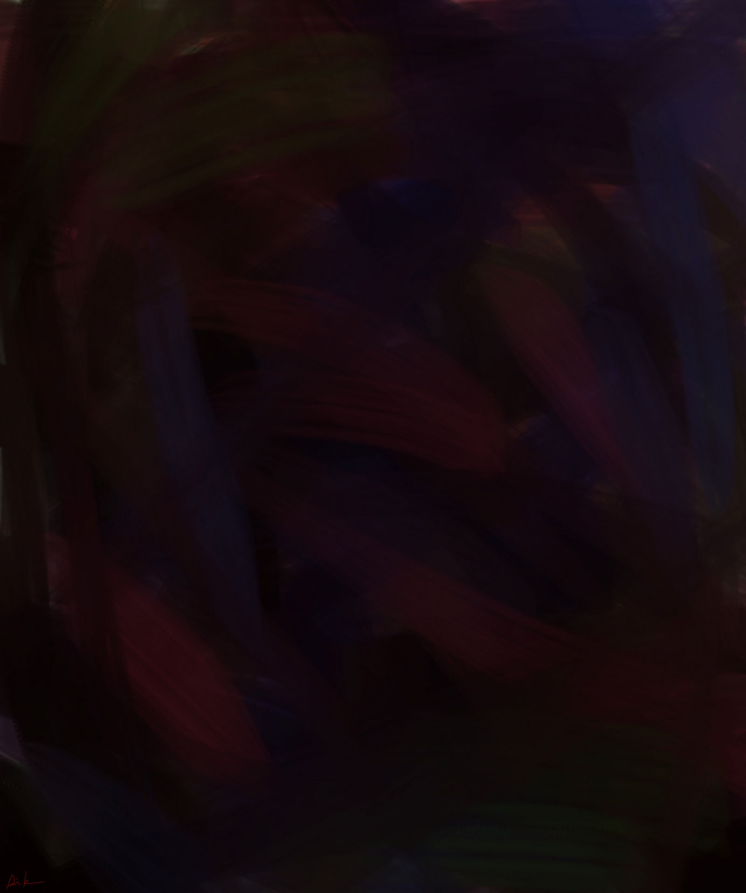
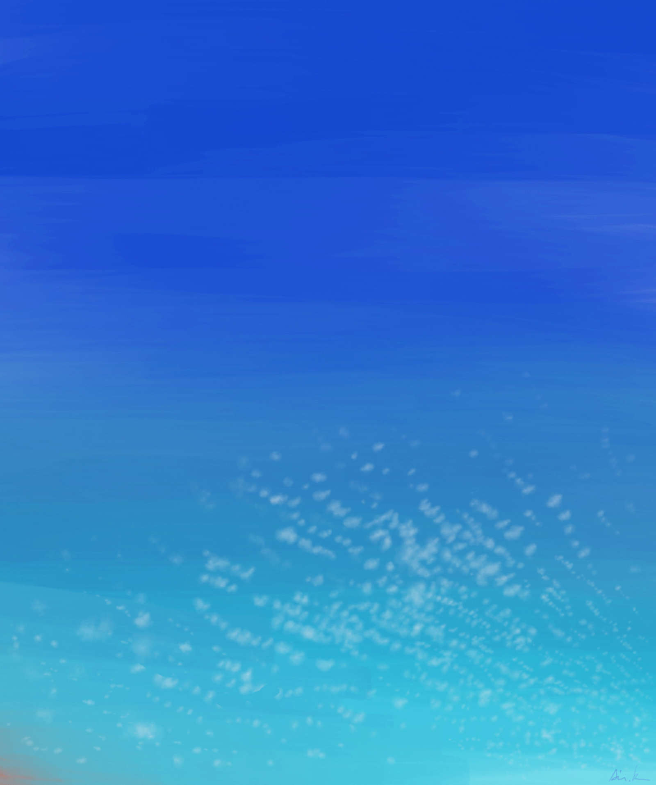

| アスタリスク《＊》 第Ⅱ部 -愛- (ICON NOVELS) | |
| 浦嶋嶺至 | |
| JUSTFIT (2015) | |
-愛-
浦嶋嶺至
――っかしいなあ。
たしかに、君原だと思ったんだけど。
予備校のロビーで瑶はふと見慣れた背中を見かけたと思い追いかけたが、授業終了と共に溢れ出た学生達の波に呑まれ、玄関を出たところでその陰を見失ってしまった。
あの遊園地以来、愛とは顔を合わせていない。
夏期講習で１、２コマほどは同じ授業を取っていたはずだが、それが始まっても愛とはついぞ出食わすことがないまま予備校通いが続いていた。
美術部の活動日に出ても、愛の姿はなかった。
これまでは真面目に部活にも出て、副部長として部員からの信も厚かった愛の不在は、夏休みの部活動にも少しだけ違和を生じさせていた。
心配した部長がＤＭで尋ねたが、いつも「夏バテだから」とか「家で作業進める」だのといった理由が返ってきた。
８月も半ばを過ぎる頃には、君原のことは静観しよう、という雰囲気が部内で出来上がっていた。
９月の文化祭に向け、美術部員達は展示用の課題を２点作成するのが決まりになっているが、どっちにしろ、あの君原のことだから、課題はきちんと仕上げてくるだろう。
それが大方の見方だった。
瑶も様子が気になって何度かＤＭを送ってみたものの、愛からレスが返ってくることはなかった。当初は「いつものことだ」と気にかけなかったが、あの遊園地の後もう３週間も過ぎていると、さすがに少しひっかかってくる。
本来なら、今受けている講習の授業は愛も一緒に申し込んでいたはずだ。
なのに、姿を見ないのは、どういうことか。
ひょっとして、あえて自分と顔をあわせないようにしているのではないか。
瑶の中では、あの日の途切れた会話がリフレインされていた。
「瑶クーンっっ」
ぼんやりとドアの前に立ち、校舎を出て後ろから抜いて行く生徒達の背中を眺めていた瑶の耳に、自分の名を呼ぶ声が飛び込んできた。
手を振りながら近付いてきた栞莉が、そのまま、ボン、と瑶に体当たりした。
「どうしたのぉ、こんなとこでボッとしてー。勉強疲れ？ それとも、夏バテ？」
「いや......いま、ちょっと......」
「なァに？」
「あー、なんでもない。中学ン時の同級生に似たやつがいたから、ひょっとしたら、と思ってたら見失っちゃって......」
瑶はてきとうに誤魔化 した。
「ふーん。
あっ、ね、ね。それよりお昼どうする？
昨日の帰りにクラスのマイちゃんに会ってね、駅の東口のほうに、ちょっといいパスタ屋さんがあるって教えてもらったんだけどぉ、そこ行ってみない？」
「あー、それでいいよ」
「んもおっ、なんかどーでもいいって返事ィ」
ぷく、と頬を膨らませ栞莉が拗ねる態度をみせる。
こういうときの栞莉は、かわいいと思う。
こんな風に、二人の間でコミュニケーションが深まっていくんだな。
栞莉の表情を見ながら瑶はそんなことを考えていた。
――あいつとは、こんなふうにコミュニケーションとってなかったな。
ふと、瑶の中で、ここにいないもう一人の姿が浮かぶ。
瑶は、もう一度周囲をぐるりと見渡した。
――俺、誰を探してんだろうな......
「なにしてんのォ瑶くーん、早く行かないとお昼食べそこなっちゃうよぉ」
先を歩いていた栞莉が瑶の遅れに気付き振り返る。
「あぁ、ごめんごめんっ。考えごとしちゃってサ」
「もぉーっ」
追いついた瑶の腕を掴み、栞莉が引っ張って行く。
まるで、見失わないようにするかのように、その手は力がこもっている。
「そういえばさ、栞莉ちゃん、この夏期講習で君原と会った？」
「愛と？ ううん、そういえば見かけないね。
あたし、瑶くんと一緒の講習取ってると思ってたんだけどな」
「俺も、そう思ってたんだけど」
「あたし達、思い違いしちゃってたのかもね」
「ああ......そうかも」
そう話しながら、栞莉は腕を掴んだ手を次第に下ろし、瑶と手を絡ませてくる。
瑶も黙って栞莉の指を掌で包み込んだ。
パスタ屋へ向かう道すがらも、栞莉は休まずしゃべり続けていた。
つき合い始めの頃の栞莉は口が重かったが、打ち解けると、話が途切れない。
こんなに明るい娘だとは、瑶も気づかなかった。
だが、栞莉の話を聞きながら、瑶の頭でその会話は通り抜けてしまっていた。
「あ、ホラ、あそこだよ。マイちゃんの言ってたパスタ屋さん」
踏切を越え道なりに左に曲がったところで、栞莉が目指す店を指差した。
「ああ......」
返事はするものの、瑶はどこか虚ろだった。
それを栞莉に悟られまいと、笑顔を返す。
栞莉は嬉しそうに瑶を見つめた。
店のドアを開けると、昼時でかなり混んでいる。
栞莉が空いているテープルを見つけ瑶を促し席に着いた。
店員からメニューを受け取り、栞莉が注文を選び始める。
「えっとね......瑶くんは、どれがいい？」
「そうだなあ。俺は――」
何気ない会話。
相槌をうち、投げては返す。言葉のキャッチボール。
恋人って、こんななのかな、と瑶は考える。
目の前には、栞莉がいる。
耳からは、栞莉の声が聞こえる。
傍 に居る栞莉の甘い香りが鼻腔をくすぐる。
だのに、
心は、どこかに置いてきてしまっている。
「......ねぇーっ、」
「え？ ごめん、ちょっとぼんやりしてた。何？」
「もぉーっ」
テーブルの対面で、栞莉が不機嫌そうに眉間を『八』の字に歪める。
こんな小さなゲームの繰り返しの煩わしさがこそばゆい。
「さっきの授業で、ちょっと気になるところがあってさ......それで？」
「だからね、あたしが瑶クンの絵のモデルを......」
栞莉の話に生返事をしながら、瑶は別のことを考えていた。
頭の中に、学校があればいつでも合わせていたあの顔が浮かぶ。
瑶は、美術室での風景を懐かしんでいた。
42
日間。たったの６週間なのに、あの風景に囲まれていないこの夏休みを途方もなく長く感じる。
あたりまえに思っていたことが、かけがえのないものだったことに瑶は気づき始めていた。
それを喪いつつある予感が胸をざわつかせる。
あの場所が、恋しかった。
けれど。
――夏休み明けの登校初日が２日目なんて、理不尽だ。
生理で重たい躰 を抱え、愛は無理矢理に校門へと足を運んでいた。
まだ暑さも残るものの、空気は微かに和やかな秋の気配を運び始めている。
生徒等は久々に顔を合わせる同級生と再会の歓びを語り合いながら校門をくぐっていく。
だが、愛の気持ちは、馴染めなかった。
夏休みが明け、通学の日々が始まった。
６月の衣替えで上着を羽織る必要がなくなったことが、愛には不満だった。
白いブラウスから嫌でも透けるブラジャーの線
。
強調される胸の膨らみ。
通学する電車の中で、男たちの視線が自分の胸元に注がれているのがわかる。
だから、夏休みが来て、愛はほっとしていた。
区域内では「可愛い」と評判の夏服だが、それも愛にとってはただ『女を強調するためのアイコン』でしかない。
評判であるから、なおさら視線は集まる。
毎日毎日、男に視姦され続ける。
この抜けるような白さのブラウスも、袖の折り返しに配されたチェック柄も、ライトグレーのスカートも愛にとっては嫌悪だった。
明日の体育、プールの授業は見学になることだけが今の救いだった。
憂鬱なのは、生理のせいだけではない。
今日からまた瑶と顔を合わせなくてはならない。
――どんな顔であいつと会ったらいいんだろう。
悩み事の多くなった学舎
。
愛の苦悩を抱えて聳え立つ姿は、バビロンの巨大な壁を思わせ、心にのしかかってきた。
男だったらよかったと、愛はつくづく思う。
そうすれば、瑶とだって、ふつうに親友になれただろうに。
瑶が自分のことを女として見ているのを、愛は自覚していた。
けれど。
愛には、その瑶の気持ちに応える己
を持ち合わせてはいなかった。
瑶は大切な友だちだと思う。
学校でのことも、進路も、部活での悩みも、なんでも相談し合える。
悪ふざけしてからかい合う、気のおけない相手。
だけど、その友の想いを受け留め、返してあげられない自分。
それがせつなくて、申し訳なかった。
それでも、親友の栞莉
が幸せになるならと、渋々キューピッド役を引き受けた。
たぶん、瑶が気乗りしないだろうことを予感しながら。
それでいい、と思ってた。
なのに、心が憂う。
――これじゃ、キューピッドじゃなく、道化 だな。
愛は自嘲した。
ふと前を見ると、数メートル先、見慣れた長い髪が風になびいている。
白のブラウス。ライトグレーの襞スカート。
心なしか、その髪の匂いも漂ってくるように感じた。
このまま歩いていけば、玄関の手前であの髪に追い付くだろう。
愛は躊躇 い、歩幅を狭め、やがて立ち止まった。
予鈴が鳴る。
親友の背中に、愛は声をかけなかった。
一日が明けても子宮の鈍い疼
きは消えず、
予定通り、プールは見学した。
射すような太陽を日傘で避けながら、愛はプールサイドの階段席に腰掛けていた。
クラスメート等が波立てる水面がキラキラと光の粒を飛び散らす。
消毒剤の匂いの飛沫が愛のいる所まで届いてくる。
――プールの見学って、なんでしなくちゃなんないんだろう。
プールだけでなく、体育すべてで。
見学なんて、ただこうやって体育座りして眺めてるだけで終わってしまうのに。
それなら、図書館で自習でもさせたほうがいいんじゃないかな。
ぼんやりと、愛はそんなことを考える。
けれど、躰が抱える鈍痛が、嫌でも心を現実に引き戻す。
愛は臍
の下を握るように押さえた。
胎内がじくじくと蠢くのを感じる。
女である故に月に一度与えられる苦痛。
胎盤の剥がれ落ちる感触。
愛にとってそれは自分の躰が生殖の道具であることを嫌でも想起させるイニシエーションだった。
――ほんとうに、こんなもの要らないのに。
子供なんて欲しくない。
男をこの自分の中に侵入させるなんて、空想しただけで吐き気がする。
プールに目をやると、男子達がチラチラと水着姿の女子の姿を盗み見ているのがわかる。
――この薄い布も、男たちの欲望を満足させるだけのものじゃないか。
男は、女の躰を自涜
か性処理の補助具くらいにしか思ってないんだ。
目を逸らし、膝を抱え俯 く。
愛は昨日の朝のことを思い返した。
あのとき、どうして栞莉に声がかけられなかったんだろう。
ただいつものように、肩をぽん、と叩けばいいだけだったのに。
「どうした？ 気分悪いのか？」
ふいに、馴染みのある声が耳に届いた。
顔を上げる。
太陽を背にした瑶のシルエットが、心配そうに日傘の中を覗きこんでいた。
飛び込み台の順番待ちの列から離れ、様子を見に来たのだ。
「ちょっと、水面が眩しくってさ」
口角だけを上げて愛が応える。
「ここ、日陰がないからなあ。暑いのになんで外で見学させるんだろうな」
「あんたも同じこと思うんだね」
「女は、たいへんだな」
と言って、瑶はプールのほうに目をやった。
女子たちが順々に水飛沫を上げ水面
に呑み込まれていく。
そのたびに波の打つ音がプールサイドに反響する。
「そう言いながら、瑶、あんただってヤらしい眼で女子達眺めてるじゃん」
そう言って愛は顎で示す。
「海パンの前、膨らんでるよ」
「えっ」
と慌てて股間に目を遣
る瑶。
大丈夫なのを確認すると、ふたたび愛を見、
「からかうなよっ」
と言い返す。
飛び込み台のほうで自分の名を呼ぶクラスメートの声がし、「おう」と応え瑶は戻っていった。
立ち去り際、改めて愛に声をかけた。
「あ、今日は来るんだろ？ 部活。まさかそっちも生理で見学するわけじゃないよな？」
「ばーか」
お互いに口元で微笑を交わす。
瑶の去った後、愛はふう、と空を見上げた。
――それでも、あんただけは、心を許せるよ、瑶。
性差なんて関係なく。
そう。
友として――
鰯雲がゆっくりとコバルトの背景を漂っていった。
*
日焼け止めを塗っていたが、プールサイドで少し焼けてしまった。
少しひりつき始めた腕をさすりながら、愛は美術室の隅に陣取り、誰も後ろを通らないよう背中を壁に密着するように着座してイーゼルにカンバスを立てた。
黒く塗り込められた画面。
ところどころ、その黒の背後の色が透け、赤や青、茶がうっすらと浮き出ているが、元々ここに何が描かれていたのかは、もう分からなくなってしまっている。
愛は、凝
っとボコボコと波打つその黒を見詰めていた。
まるで、その闇の中に在ったものを透視するかのように。
放課後の部活動。
出席したのは、瑶に促されたせいではない。
けれど、瑶が声をかけてくれなかったなら、今日の部活は結局休んでいたかもしれない。
きっかけを作ってくれた瑶の心配りが有り難かった。
そんな愛の心情に無関心なそぶりで、瑶は黙々と自分の課題の作業を続けている。
いつもの瑶の無愛想が、愛には心地良かった。
カンバスの布地を目で追いながら、愛は黒い陰の中の己の心を探っていた。
答えなんて、いくら考えても出てはこないのに。
愛は心で呟く。
――ほんとはね、あたし......
――あたし――
質問だけが胸に渦巻き、胎内をかき乱し、愛の中の穢れを吐き出していた。
「えーっ、中止......？」
昼休み、一学期と同じようにいそいそと美術室へ向かおうと教室から出たとたん、栞莉は廊下で待っていた愛に呼び止められた。
当分の間、モデルはお休み。
唐突な愛からの提案に、栞莉は戸惑った。
「うん......もう文化祭も近いからさ。あたしだけが部室を独占してるのも限界なんだ。だから、しばらくお預け」
「そうかぁ......。ざんねん。せっかくあたしのほうも気分が乗ってきたとこだったのにぃ」
「ごめんね、ホントに」
「そうなるのがわかってれば、夏休みの間も続ければよかったね」
無垢な栞莉の返事に、愛は苦笑いで応えた。
「夏の間なんて、あの部室は蒸し暑くってやってらんないよ」
「そっか。
あー、けどホント残念ー。でも、ちゃんと完成させようね、あたし達の作品」
「もちろん。それは約束する」
自分達の作品、と栞莉が言ってくれたことに、愛は嬉しかった。
文化祭まで３週間を切り、愛も展示のための課題作りに取り組むため、栞莉の絵は後回しになった。それは事実だ。
だが、栞莉には伝えない別の理由も、ある。
言えなかった。ぜったいに。
栞莉がこの夏休みの終盤に瑤の絵のモデルを始めたのも知ってる。
しかも、栞莉から提案したのだということも。
文化祭用の２点の課題に詰まっていた瑶は、易々と承知してしまったらしい。
瑤も栞莉も、ぜんぜん気付かずにモデルを志願し、請けてしまった。
自分にとっては、これがどれほど大切なことなのかを理解されずに。
――ＳＯＵＶＥＮＩＲ――すぅべにぃる。
愛の心でこんな単語が漂う。
部室の描きかけのカンバスの中に、栞莉の絵を発見したとき、愛は胸に楔 を打ち込まれたような痛みが走った。
愛は、目の前でかけがえのない何かが奪われる気分だった。
心が泥靴で踏みにじられた、そんな気がした。
栞莉は無邪気だったのだと思う。
おそらく、深く考えることなく、瑶の絵のモデルをやろうと思ったのだろう。
「愛のモデルをやってるのだから、瑶にも同じように描いてもらおう」くらいの軽い気持ちで。
心が、弾けそうだった。
――パンドラの箱が開かれたとき、箱の隅には「希望」が残ったという。
けれど。
あたしのパンドラの箱は、希望など残ってはくれないだろう。
箱の中に在るものが何かを確かめる前に、業火が吹き上げ、すべてを焼き尽くすんだ。
それが、あたしの心。
だから蓋をする。鍵をかける。
その鍵を腹の奥に呑み込む。
あたしの中の邪悪が、この「世界」を壊さないために。
混じり合う自分の気持ちを悟られないように明るく振る舞いながら、愛は栞莉を促した。
「――あ、和宮なら、たぶん美術室にいるよ。」
「ありがと。さんきゅ、愛」
肩を弾ませながら、愛の背中が廊下の角に消えていく。
栞莉は変わったな。
そう愛は思った。
以前は他人と話すのが苦手で、いつもおどおどしてたのに。
これも、瑤と付き合い始めたお陰なんだろう。
恋で人が変わるなんて、実際にみたのは始めてだ。
旧棟の廊下を小走りで行く栞莉が見える。
その姿が美術室のドアに着き、笑顔を振りまきながら消えていくのを愛は目で追い続けた。
栞莉も瑶のモデルで忙しくなる。
愛も自身の課題作りに時間を割かなければならない。
これで、しばらくは栞莉とふたりきりになることはないだろうか。
少し、それで気持ちを落ち着けたい。
顔を合わせなければ、ふたりきりにならなければ、
血が上った頭も虚ろになった心も静
んでくれるだろう。
そうは、簡単にはいかなかった。
文化祭の準備もあって、生徒たちの帰宅時間も延長された。
普段は午後６時までだが、午後８時まで部活動が許される。
文化祭の前日・前々日は最大午後10
時まで。
美術部は基本は銘々の作品を並べるだけなので他の部よりは準備も装飾も簡素だが、作業の遅れている部員はピッチを上げて絵や彫塑に取り組んでいる。
絵は各部員３点。全員同一テーマの静物画が１点と、自由課題２点。それ以上は各自自由。
静物画はもともと一学期の最初に全員参加して行うこの部の恒例課題だ。
並べてみれば50
点を超える展示数はそれなりに壮観さがあった。
２日ある文化祭準備日の１日目。
まずは、全員の静物画が並べられた。
それを基本に、各自の作品が配置されていく。
「そんなにおっきなカンバスにするからだよぉ。間に合うの？」
展示の準備も進み、他の部員たちは徐々に自分の作品の展示を始めている中、隅に追いやられつつまだ絵筆を握っている瑶に愛が茶々を入れる。
「これでも80 号で抑えることにしたんだよ。ホントは100 号で描くつもりだった」
「ばかじゃん」
「このサイズだと家に持ってって描くわけにもいかないしな」
「電車に持ち込むと迷惑だよねぇ。身の丈に合わないことをするからだよ」
半ば呆れ顔で愛が揚げ足取りをする。
「もう、間に合わなきゃこのまま実演てことで期間中描き続けるからいいよ」
「栞莉も一緒に実演展示させるの？？」
と言って、愛は冷ややかに、まだモデルのためにポーズをつけながら瑶に向き合っている栞莉に目配せをした。
「へーき、あたしは。それもおもしろいかも」
「栞莉ぃ......」
ふふふ、と幸せそうに瑶に微笑む栞莉を受けて、瑶がアイコンタクトで頷く。
「こんな考えなしのバカに付き合うことないって」
「こぉんなにおっきい絵で描いてくれるんだもんっ。最後までつきあわないと。ね？」
と言って栞莉はモデルを見詰める瑶の眼差しを受け止める幸せに浸る。
愛は呆れて話を変えた。
「ところで、もう１点は？ そっちはもう描き上げてるの？」
「ああ。それは問題ない。明日、家から持ってくるから」
瑶の話っぷりから、どうやらもう仕上げている様子が伺える。
副部長として展示を執り仕切っている愛は安心した。
パレットの絵の具をナイフで拾いながら、瑶が尋ねる。
「お前のはどうしたんだよ。まだ全然置いてないじゃん」
「あたしは、最後の仕上げがあるから。家で描き上げて持ってくる。どうせ学校じゃ展示の準備に忙しくって自分のには手がまわらないと思ったし。ここで続きをするのは最初から諦めた」
「副部長はたいへんだな」
「口動かしてないで、さっさと仕上げなよ。『副部長』は部員の作品並べるのを待ってるんだから。配置だって考えなくちゃなんないし」
「へいへい」
ふう、と溜息を吐いて部屋の内を見回す。
まだ何人かの部員の作品が来ていないものの、レイアウトはかなり出来上がってきていた。
その中で、１メートルほどの幅でぽっかりと空いている空間がある。
愛が自分の作品を設置するためにキープしている場所だった。
明日、ここに作品を持ってくる。
開催日ギリギリまで、他人に見せたくはなかった。
*
日暮れた校庭に３つの影が歩く。
「とうとう、明日になっちゃったね」
労 うように栞莉が瑶に話す。
「ああ――。結局仕上がんなかったなあ」
「明日、始まるまでにはなんとか完成させようよっ。あたしも朝イチで来るから。６時からでいい？」
「わりぃ。頼む」
丸一日カンバスに向かっていた疲れか、欠伸をしながら瑶は返事をした。
「とうとう明日か。がんばっかなぁ」
「よーし、がんばろーっ」
瑶を励ますように栞莉が叱咤する。
並んで歩く二人を、愛は後ろから少し距離を取り眺めていた。
街頭に照らされた満面の笑顔を振り撒く栞莉の、幸せそうな姿を愛は見詰める。
頭では、理解してる。
でも、心が、納得しない。
心の澱
は、愛の胸の奥で蓄積し、枷の重石
のように躰を縛ってゆく。
この苦しみを、誰にも打ち明けられない。そのことが更に苦悩を募らせる。
自ら蒔いた種。
業
。
けれど、背負うには、17 の歳月の少女の躰には、あまりに大きく、重い。
３人は大きな国道に出た。
古くからの街道でトラックの往来が激しい。通学路はここを横断して川沿いの道に出る。
歩行者用の信号が青に変わる。
メロディが鳴り、人々を促す。
交通量の多い交差点を、瑶と栞莉がおしゃべりをしながら渡って行く。
その後を、愛が追っていった。
ラッシュの中カンバスを抱えて揉まれるのを避け、愛は早めに学校に到着した。
正門には文化祭実行委員会の建てたゲートが聳
え、来場者を迎え入れる準備が整っている。
まだ午前７時前だというのに、校内は最後の準備を進める生徒達で騒々しい。
祭を目前にした高揚した気分が学舎
を包んでいた。
美術室に到着すると、先に来ていた瑶と栞莉が愛を出迎えた。
愛が視野に入るや、栞莉が手を振って挨拶する。
「おっはよーっ」
「おはよ。どう？ そっちは。出来た？」
愛が栞莉の勢いに圧されて返事をする。
瑶は瞳をカンバスから離さないまま、筆を掲げて挨拶を返した。
絵に相当集中していたのが羽織るスモックの真新し目な絵の具の汚れから伺える。
こんなに大きなサイズだと、さすがに家に持ち帰って作業するわけにはいかない。
始発で登校して作業をしていたんだろうか。愛はちょっと心配になった。
「ま、なんとかな。展示してもカッコはつくくらいには出来上がった」
絵をよく見ようと愛が瑶の傍に回り込む。
色も塗られれば、さすがに80
号のカンバスは迫力がある。
愛は少し感心した。
「へえー......」
「まあ、開場時間ギリまでやってみっから」
「うん。がんばれ」
「でも期間中は乾かないだろうなあ。うっかり触られないように『ペンキ塗りたて』とか横に貼っといてくれよ」
ははは、と愛は応えた。
冗談が口に出るくらいなら、平気だろう。
瑶の作業を眺めていた愛に、横から栞莉が尋ねた。
「ね、ね、愛の絵はどんなの？」
「あ、うん――」
愛は抱えていた大きなビニールバッグを降ろし、中から幾重もの新聞紙に包んだカンバスをとり出した。
２枚のカンバスは向かい合わせにクリップで留められている。
愛は順々に４つのクリップを外すと、絵を空けてあったスペースに置いた。
20
号のカンバスに描かれた、２枚の絵。
普段の愛は12
号を好むが、それと比べたら大きなサイズだ。
画面を見た瞬間、栞莉が呟いた。
「え、これ......」
どう反応していいのかわからず戸惑う栞莉の姿につられ、瑶も一瞬手を止め覗き込む。
愛が持ち込んだのは、抽象画だった。
極めて単純な。
壁に飾ると、愛は隅のテーブルに屈み、積まれていたネームカードに画題と自分の名を書き入れた。
それをそれぞれの絵の下に貼る。
◎題:すぅべにぃる ～souvenir～
◎作者:君原 愛
もう１枚。
◎題:虚しい空
◎作者:君原 愛
――これでいい。
愛の満足気な表情が、かえって見る者たちの謎を深めた。
朝７時を過ぎて、徐々に美術部員たちも自分の作品を持ち寄ってきた。
その度に、愛の２枚を前に、全員が一瞬凍りついた。
謎かけのような２つの画面。付けられた題。
その意味を訊ねられても、愛はただ口角を上げるだけで、一切答えなかった。
*
「和宮、もう１枚は？」
次第に展示が揃っていく内、愛がふと思い出して瑶に訊ねた。
とりかかっている絵に集中するあまり、瑶はもう１枚の作品の展示さえ設置する間もなく忘れているようだった。
愛の指摘で初めて気づいた様子で、瑶が顎で示す。
「ああ、そこにあるだろ。壁に掲げといてくれよ」
声だけかけて、要はふたたび80 号の画面に没頭した。
見れば壁に裏返しのカンバスが立て掛けられている。
背面の布地と木枠には『６Ｆ』の印。
80
号に比べて随分小さいんだな、と愛は思った。
その絵を飾るために、表を向けた愛は、その場で固まった。
――あたしだ。これ。
愛の提出した２枚の絵は、部員たちの間で話題となっていた。
部員だけではない。謎めいた絵の噂は祭の人混みの間を次第に拡散していった。
開催２日目ともなると、校内での噂は浸透し、この愛の絵を眺めに、生徒たちばかりかこれまで美術部にまるで関わりのなかった教師達まで足を運ぶ事態となっていた。
中でも黒だけが塗られた１枚について、様々に噂が飛んでいた。
絵の意味について質問されても、愛は一切答えなかった。
ただ「描かれているものだけ見て」とだけ告げた。
だが、『描かれていないもの』を、絵を見た皆は知りたがった。
絵に愛のつけた題は、『すぅべにぃる』。
それが全ての説明だ、と愛自身は考えていた。
もう１枚の絵は、空に浮かぶ鱗雲。鮮やかな青。
タイトルは『虚しい空』 ――空虚、ということ。

『すぅべにぃる ～souvenir～』

『虚しい空』
愛にとって、そんな雑音はどうでもよかった。
*
文化祭だというのに、周囲の晴れやかな気分とは裏腹に愛の心は曇っていた。
準備期間中は副部長としての役割を担うのが精一杯だったことは、少しでも気を紛らせたが、開催されてしまえば慌ただしさからも解放される。
気の抜けた愛の中で、苦悩がまたぐつぐつと沸騰を始め、息が詰まった。
どこかで呆けたい。
そう考えた愛は、人混みを避け、彷徨った結果、体育館脇の非常階段に逃げ込んだ。
上階で腰を下ろすと、鉄の階段はひんやりとして、秋風と共に愛の心を落ち着かせた。
軽音学部の演奏なのか、楽器の音が講堂のほうから漏れて届く。
他校の生徒たちがきゃっきゃと戯れながら校舎を繋ぐ通路を渡るのが見える。
見上げれば、雲の帆が風を受けてゆっくりと碧 の中を漂っている。
――雲と一緒に、時間も遡れればいいのに。
何も考えずにいられた、楽しい頃に戻りたい。
さやさやとした風の音を聴きながら、愛はぼんやりとそんなことを考えて空を眺め続けた。
瞳
を閉じ、愛は全身の感覚でこの世界を受け留めた。
大気と同化し、この時空に溶け込もうとした。
己を失くしたかった。
そうすれば、この悩みも、悩む自分も消える。
カンカンと鉄の板を踏む音で自我が現実 に引き戻された。
足音は、愛の座る踏板のすぐ下で停まった。
「よう――」
ゆっくりと瞼
を開く。
愛の腰掛ける段より２つ下に立つ瑶が、同じ高さの目線で見合わせた。
「下からぱんつ見えるぞ」
「あっそ」
「スマホで写メ撮られたらどーすんだよ」
「構わない。あたしは」
「俺が構う」
瑶が発した言葉に言外の意味があることに、愛は気付かないふりをした。
「おまえ、さ......あれ、いったい何だ？」
瑶が自分の絵のことを言っているのはすぐに判った。
「べつにー。ただああいうのが描きたかっただけ」
昨日、ギリギリまで描き続けていた80
号の絵と共に２点の絵を出品すると、カンバスに精魂を使い果たした瑶は、午前中は衝立
の陰でテーブルに突っ伏しぐぅぐぅと寝ていた。
午後になり、翌２日目の今日を迎えても、愛と瑶は特に言葉を交わすこともなく過ごしていた。交替でクラスの出し物の番を頼まれて顔を合わす機会もあまりなかった。
自身の作品を仕上げるのに手いっぱいで、愛の作品にはまるで興味もないように見えた瑶が自分の絵のことを訊ねたのが愛は少し意外だった。
それ以上に、愛は瑶に確認したいことがあった。
あったが、あえてそれを訊くのを避けている自分がいた。
「ねぇ......なんであんな絵、貼りだしたのさ」
「あんな絵、って？」
「言わなきゃわかんないの？」
「......」
昨日の朝、瑶は部の規定どおり２枚の絵を展示した。
瑶が付けたカードには、それぞれの題が『肖像 #1
』『肖像 #2
』と書かれていた。
１枚は、80
号のカンバスに描かれた栞莉の絵。
大きな画面には、ほぼ等身大の栞莉の姿が写されている。
そして、もう１枚。６号の絵は、80
号の隣に置かれいっそう小さく見える。
描かれていたのは、カンバスに向かい絵筆を握る愛の姿。
部活の合間に愛を眺めながら描かれたものだった。
こんな絵を描いているなんて、愛はまったく知らなかった。
瑶から告げられてもいない。
たぶん、長い時間をかけてデッサンをとり、家でこつこつと仕上げていったのだろう。
勢いに任せた80
号の絵と比べ、小さいながらも緻密で丁寧な気持ちがタッチから滲む。
掲示が済むと、並べられた２枚の絵を見比べながら、愛は立ち尽くしていた。
絵には描いた者の心が写しだされる。
対象への執着や、愛情が筆の跡となって残る。それが見る側に伝わる。
２枚のうち、１枚は筆跡に戸惑いや悩みが見え隠れする。色彩も大味で茫洋だ。
けれど、もう１枚のほうは、多用された原色が絵の具と共に己の感情が画面にぶつけられ、熟考され懊悩した末に辿り着いた結論が現れている。
どちらに気持ちが、想いが込もってるのかは、明白だった。
絵を描かない栞莉は、そのことには気付かない。
あれは謎かけ。
絵を描く者にだけに伝わるよう秘められた暗号だ。
この文化祭の最中、美術室にあまり立ち寄らなかったのは、栞莉や瑶とあまり顔を会わせたくなかった以上に、瑶のあの６号の絵から逃げたかった。それもある。
小さいが、巨 きく重い絵。
瑶が話を逸らす。
「お前も、栞莉ちゃんの絵を出すのだとばっか思ってた。一学期からずっと描いてたからな」
「あれは、栞莉との約束だから。誰にも見せないから、って」
「自分のためだけに描いてたのか......」
愛は答えず、宙を見る。
「そっか......」
それ以上瑶は訊かなかった。
会話が無意味だと思ったのか、瑶の優しさだったのか。
暫く同じ雲の流れを追いかけた後、瑶が呟く。
「あの黒の下にもともと描いてあったのは、何なんだ」
ぽつり、と愛が漏らす。
「あれは......あたしの気持ち」
無意識に口を吐 いて出た言葉は本音なのかもしれなかった。
「なら、俺も同じ答えだ」
ハァ、と深く溜息を吐いて愛が繋ぐ。
「栞莉は、どうするのよ......あたしは栞莉の幸せを......栞莉のことだけを願って......」
愛は膝を抱え、組んだ腕の中に顔を埋めた。
軽音楽部の演目が終わったのか、講堂から拍手の音が聞こえる。
どうやらアンコール曲が始まったようだ。
愛も、瑶も、風に吹かれて届いてくるメロディに聞耳を立てていた。
口を開いたのは、瑶のほうだった。
「俺の、好きなのは、さ......
ホントに、好きなのは......」
隙 かさず愛は瑶の言葉を遮った。
「それ以上言うと、絶交する」
「絶交されても、自分の気持ちに、やっぱり嘘はつけない」
俯いていた愛が顔を上げ、まっすぐな瑶の瞳を凝 っと見詰めた。
「そんな......あたし、困る......」
演奏が終了し、講堂の手拍子が、次第にテンポを早めていく。
立ち上がり、瑶を見ることもなくゆっくりとその横をすり抜け、愛は階段を降りていった。
踏板がたてるカンカンという金属音が胸に突き刺さる。
小さく遠ざかっていく愛の背中を、瑶は黙って見続けていた。
午後４時を過ぎて、文化祭は閉会となった。
各教室では展示の片付けが行われている。
手の空いた者から順に、校庭で行われる後夜祭へと生徒等は繰り出していた。
校庭の中心には廃材で櫓
が造られ、ファイヤーストームの準備が整えられつつあった。
午後６時をもって点火されると、めいめい持ち寄られた、役目を終えた展示の飾り付けが次々に投げ込まれ、火勢を増した。
次第に暮れてゆく空の下で、祭の後の高揚と疲労に耽 る生徒たちの顔が紅々 と照らしだされた。
美術室では、愛がひとり留守番をしていた。
片付けのほぼ終わった部屋は、殺風景なほどにがらんとしている。
部屋の片隅に積み上げられたまま、まだ定位置に戻されていない机や椅子が、いっそう部屋の空間の空虚さを強調する。
他の部員たちは後夜祭へ行ってしまった。
愛は、傍の机の上に腰を乗せると、そのままごろん、と仰向けになった。
天井の蛍光灯。どうやってそこまで届いたのか、油絵の具の飛沫が点々と星を描く。
校庭に向いた窓のガラスが後夜祭の喧騒と共振し、ビリビリと唸るのを愛は聴いていた。
なんとなく、あの狂騒の輪に加わる気分ではなかった。
ファイヤーストームを軸に、実行委員が文化祭の最後を盛り上げる。
火焔の中へ、生徒たちが次々と持ち寄った物を放り入れていく。
展示の飾り付け。
材木。
白い模造紙や、黒のラシャ紙。
燃えるものはなんでも投下する。
そのたびに炎は勢いを上げ、祭の思い出は火の粉となって中空へと舞い上がっていった。
「あれ？ 瑶クンは？ ここにいない？」
部室に栞莉がひょっこりと顔を出し、寝そべる愛を見つけ声をかけた。
「校庭じゃ、ないの？」
「見つからないのォ。困っちゃった」
瑶の絵が、無造作に壁に凭 せ掛けてある。
栞莉は、近寄ると80 号に描かれた自分をまじまじと見つめた。
６号のカンバスのほうは、どこにいったのだろうか。さっきまで横に並んであった筈なのに。
愛はふと疑問を抱いた。
並んでいても、栞莉には、瑶の描いたその２枚の違いはわからないけれど。
比べる意識がなければ、瑶の２枚に秘められた意味にも気づくこともないだろう。
「そういえば、あの絵......」
独り言のように、栞莉が呟いた。
「え？」
「ほら、愛の出した２枚。ずいぶん変わった絵だね」
「ああ......あれね」
栞莉が小さな絵のほうのことを言っているのではないと分かり、愛は胸を撫で下ろした。
「何か、意味があるの？ ほら、あたし絵のことぜんっぜんわかんないから」
「うん......」
少しのあいだ口籠った後、愛が答えた。
「自分の、いまの気持ち素直に描いてたら、ああなった」
「ふーん」
愛は、裏を向け脇に立て掛けていた自分の絵を、表に返した。
青と黒、２つの色がコントラストをなして並ぶ。
栞莉は絵の正面に直り、２つの色を見比べてみた。
中でも、より抽象性の高い黒に身を寄せ、意味を探ろうとした。
「......やっぱ、わかんないや。ごめんね愛」
ううん、と首を振り微笑を返す愛。
栞莉はもう一度改めて、カンバスの布地まで見ようかという程に絵を凝視してみた。
その栞莉の背中を、愛は見詰めていた。
栞莉の影が、黒の画面に映り込む。
あの漆黒に塗り潰された背後にあった、栞莉の映 し身 が、愛の心で重なる。
愛の視線が栞莉の背中に透けるブラジャーのラインを捉え、カメラフレームのようにズームアップされる。
愛の心眼は、栞莉の素肌のイメージを構築していく。
――もう、脱がなくても、わかる。
栞莉の肌、栞莉のほくろの位置、栞莉の胸の形......
栞莉の、すべてが......
瞳の中の栞莉の映像が歪み、下瞼から溢れたものが零
れ落ちた。
一滴。二滴。
愛の描いた黒い絵を眺めていた栞莉は、突然背中に重みを感じ、驚いた。
「愛？ どうしたの......？」
肩が少し冷たさに触れた。
愛の埋めた頬が、濡れているようだった。
「ごめん......ちょっと、疲れちゃったみたい......少し、こうさせてて......」
「......うん......」
愛の腕が栞莉を包み込み、力を込めた。
その腕にそっと栞莉は手を添える。
何も言わず、栞莉は愛を受け留めた。
栞莉は正面の黒の絵に目を留めていた。
絵の意味は解らないけれど、こんなのを描かねばならない愛の苦しみの存在は、察した。
傍では、80 号のもうひとりの栞莉が、２人を見つめていた。
気持ちが落ち着いてきたのか、少し経って愛は栞莉の体から離れた。
頬に伝った涙の跡を拭いながら、
「なんか、ごめんね」
と栞莉に謝った。
「ううん、いいよ。
今回は、愛も副部長で、がんばってたからね」
そう言って、栞莉は愛を労
った。
笑顔を返し、
「そろそろ、また探してくるね」
と言い残すと、栞莉はまた出て行ってしまった。
愛はふたたび独りになった。
だが、校庭の途切れぬ騒音を耳から断ち切ることはできず、己の中の世界に戻ることはできなかった。
ふと、壁に立て掛けてあった自分の絵に目が停まった。
暫く見詰め続けていた後、
愛は立て掛けてあった２枚のうちの１枚を掴むと、部室を後にした。
「――では、各部門賞の発表です。まずは映画・演劇・ステージ部門から......」
けたたましい音楽が鳴り止み、実行委員会のアナウンスが始まる。
「映画・演劇・ステージ」「演奏」「研究発表・展示」の各部門別にエントリされた文化祭の出し物は、それぞれで 各賞が授与され、更には最優秀賞となる大賞が設けられている。
とはいえ、毎年通常の展示しかいていない美術部には、そんな賞なぞ無縁だった。
むしろ過去の活動に囚われない、クラス毎の企画のほうが受賞の可能性は高かった。
美術部員たちも、部では集まることはせず、それぞれのクラスの輪に混じり仲間と創りあげた２日間の評価を胸高鳴らせ待っていた。
校庭にいる生徒達は、皆一様に、朝礼台に立つ実行委員のアナウンスする各賞の発表に注目し、結果がスピーカーから流れるたび一喜一憂した。
*
校庭に降りてきた愛の瞳に、ぼんやりと浮かぶ橙色のゆらめきが映り込んだ。
火の勢いは弱まったが、ファイヤーストームはまだ続いている。
近づくにつれ、愛の顔や露出した腕に熱が届き感じられてくる。
熱でテレピン油が揮発し始めたのか、ツンとした独特の匂いが、抱えたカンバスから愛の顔に昇ってくる。
愛は、もう一度カンバスを抱える両腕にぎゅ、と力を込めた。
「それでは、いよいよ本年度の大賞の発表です――」
お決まりの台詞と共に、ダダダダダ、とドラムのＳＥがインサートされ、場を盛り上げる。
その場にいるほぼ全員の目は朝礼台に向けられ、炎のほうへは、既に注視しているものもいない。
火の動きを見詰める愛に注意を向ける者も、誰一人いなかった。
「大賞は――」
静寂の後、司会が受賞企画名を読み上げる。
と同時に、朝礼台に近い手前のほうで、歓声と狂喜の声が上がった。
それが合図かのように、愛は、絵の木枠を握り、持った手を大きく振りかぶった。
けれど、
動きを停めた後、振り下ろせなかった。
大賞を指名されたグループが順番にメンバーを胴上げしている。
やがて、授賞式になだれ込み、慌ただしい中ＢＧＭが流れ代表者が賞状を受け取った。
喧騒を傍目に、愛は諦め、力が抜け、だらりとカンバスを持つ手を降ろした。
「よう」
かけてきた声は瑶だった。
斜め後ろから愛に近づき、横に並んだ。
「どこに消えてたのよ。栞莉が探してたよ」
「ちょっとな」
しょうがないな、というふうに、愛は息を吐いた。
瑶は愛の握るカンバスが展示の絵だということに気づき、愛の横顔を凝視した。
愛はぼんやりと炎のほうを向いたまま、
「去年の部長が、後夜祭で火の中に自分の絵を投げ込んじゃったんだよねぇ......」
と、独白のように呟いた。
「ああ、堀内先輩か。びっくりしたよなァあれ」
瑶が愛の言葉を繋いだ。愛がそれを投げ返す。
「カッコよかった」
「え」
「あれを見てね。カッコいいな、って思ったんだ。『来年、自分もやりたい』って」
瑶は呆れ顔で愛を見た。
「バカか、お前」
「うん。ばか。......ばかだよね」
そう言うと、愛は提げていた手を持ち上げ、改めて黒のカンバスを抱き締めた。
ふわっとテレピン油の匂い。嫌いじゃない。
「自分の、心のモヤモヤした何かを形に写しとることだけが目的で、残そうと思わない......それって、最高にかっこいい、そう思った。自分の映し身を供養してるみたいだった」
愛は続けた。
「でも、やっぱできないや」
慈しむように、愛はカンバスを抱く。
「あたしは、あたしの心を燃やして失くすことは......なかったことには、できないね......」
「......」
「和宮」
火を見つめたまま、愛が口を開いた。
「ちゃんと、言うね。だから聞いて」
瑶が頷く。
２人は、炎に向けて語るように、お互いを見合うことなく話し始めた。
「和宮が、あたしのこと、そういう目で見てたの、知ってる。
――あ、別に厭
らしくとか、そういう意味じゃないよ」
「わかってる。
そこでわざわざ注釈入れると、かえってそう聞こえるだろ」
瑤は苦笑して茶々を入れた。
「ごめん......」
愛は改まり、話を続ける。
「和宮のこと、大切な友だちだと思う。
けど、そういう対象として、見れないんだ、あたし」
少し間を空け、瑶が問うた。
「誰か、ほかに好きなやつでも、いるのか」
「......」
愛は沈黙する。
持っていた20
号のカンバスを抱き締めていた腕
に力が込もる。
「......言えない......」
愛は瑤の瞳をまっすぐに見て、答えた。
「和宮が親友でも、話せない」
櫓が崩れ、炎が哭く。
瑶が返事をするまで、かなりの時間が過ぎたように、２人は感じた。
「そう、か......」
黙って愛の傍で一緒に炎を眺めていた瑶は、踵 を返すと、校舎のほうへと歩いていった。
愛はひとり残され、ハァァ、と溜息を吐いた。
「ごめん......和宮」
パチパチと鳴き続けていた火も、今年の記憶を燃やし尽くし、次第に弱まってきた。
後夜祭も終りを迎え、火の周りにいる生徒の人数も徐々に減り、夜の帳
の落ち着きを取り戻しつつあった。
愛は、火の消えるまでここにいよう、と思っていた。
それが、せめてもの瑶への償いのように感じた。
土を踏む音が近付いてくる。愛はその足音のほうを見遣った。
戻ってきた瑶の手には、６号のカンバスがあった。
「え、それ......」
愛が訊ねる暇
もなく、そのまま炎に近寄ると、歩みを停めることなく瑶はカンバスを火の中に放り込んだ。
消えかかっていた炎が、絵の油分を注がれ、ふたたび勢いを増す。木枠が膨張しバキンと音を立てて弾けた。
「和宮っ！？ なにバカなこと......」
「俺も、バカなことしたくなった」
清々とした顔で瑶が応えた。
「あの絵は、ほんとはお前に渡そうと思って描いてた。
でも、受け取れる相手がいないんじゃ、仕方ない」
「そんな......」
へたり、としゃがみ込む愛。呻くように、哭 いた。
その傍で、瑶は６Ｆの愛の姿が燃え尽きていくのを黙って見つめた。
背後に気配を感じ、瑶が振り返る。
いつからそこに佇んでいたのか。後ろの陰に紛れ、こちらを見ている姿があった。
「栞莉......」
瑶の声で、愛も気付き、立ち上がって瑶の視線の先を振り返る。
見つめ合う３人の姿が、カンバスの燃える炎に照らされていた。
文化祭が終わり、２日間の代休を迎えた。
その２日目。
気分を変えようと、愛は地元から数駅先にあるショッピング・モールへと出かけた。
明日から、また学校は通常のタイムテーブルに戻る。
これから冬休みまで、月曜から金曜の日常が続く。
せめて、賑やかな場所に出ることで、少しはこの心に溜った澱 を洗い流したかった。
平日のため、モールにはあまり賑わいもなく、延
んびりとした空気が漂っていた。
幼子の手を引いた母親。老夫婦。大学生らしきカップル。
愛と同じで行事の代休なのか、男子高校生のグループ。
愛も、特に何が目的、ということもない。
ただ、ぶらぶらと過ごし、ウインドゥショッピングをしたり本屋やＣＤショップで時間を潰すのが目的だった。
併設されているシネコンで先週公開されたばかりの映画を観た後、フードコートで軽食を済ませた。
しばらくフードコートのテーブルでぼんやりとしていると、同じ年頃の高校生らしい男子が声をかけてきたが、愛は無視した。
――独りになりたいから、こんなとこにいるのに。
Leave me alone. Do your own business.
男子が舌打ちしながら去っていく。
去り際に何か悪態を吐いたようだが、愛は一切関心を示さない。
近くのテーブルでは、買い物の一休みか、乳母車の赤子と幼い少女を連れた母親が腰を下ろしている。
女の子は口の周りを真っ白く塗らしながらソフトクリームを頬張っている。
目が合い、愛が笑顔を送ると、少女は、はにかみながら微笑み返した。
この子と視線を交わせただけで、充分だな、と愛は満足した。
昨晩、しばらく放っておいた栞莉の絵を引っ張りだした。
文化祭に出した２枚と同じサイズの、描きかけの20
号カンバス。
夏休み以降も時たま家で手を加えていて、見た目はほぼ仕上がっている。
最近は文化祭用の絵にかかずらっていたため、乗せた絵の具もすっかり乾いていた。
愛はそれを確認するように画面を手でなぞってみた。
カンバス地の上に乗る、絵の具のつやつやとした盛り上がりが指先に触れた。
――ここに、栞莉のぜんぶを、写した。
栞莉も、文化祭の最中、「あの絵、そろそろ再開だね」と愛を促していた。
愛も、最後まで仕上げなくちゃならない、と思う。
絵は８割方出来上がっている。
どちらにしろ、あと数回で上がるだろう。
ただ描きたくて始めた栞莉の絵だったが、いざ終わりがみえてくると、心に寂しさの穴がどんどんと深く大きくなってくるのを愛は自覚していた。
――この絵が終わったら、
あたしたち、どうなるんだろうね。
愛は、栞莉の映し身に語りかけた。
少女との邂逅に和んだ気持ちのまま、スマホを取り出すと、
フードコートのテーブルから、愛は栞莉にＤＭを送った。
"来週から、モデル再開するよ"
*
部屋に戻った愛は、改めて絵と対峙した。
窓の外の夕空の茜色が部屋を染める。
絵の中の栞莉の肌も、大気の光を受けて朱を帯びた。
一糸纏わぬ柔らかな肉体をどれだけこのカンバスに再現できただろう。
自分の中に在る栞莉を、どこまで現
に吐き出し表わすことができただろう。
愛は、心をこのカンバスに移し、己の中が空っぽになってしまえばいいと思った。
すべてこの画面にコピー＆
ペーストして、胸のメモリをデリートできれば楽なのに。
この数カ月間の記憶。
栞莉と出会ってから、すべてのデータ。
――でも。
あたしは、あの火の中にそれを焼
べることを躊躇
ってしまった。
抱いていくことを希 んだ。
愛の手がカンバスの画面に触れる。
夕暮のピンクに染まる栞莉の躰の線に沿って、指を這わせていく。
頬に、頸に、乳房に、腰に、臍に、秘部に、そっと指紋が触れる。
布地に、模写された、栞莉の細やかな肌を感じる。
愛の頭の中で、この絵の題名が浮かんでいた。
――まるで、嵐の過ぎ去ったあとみたい。
秋風を浴びながら、愛は思った。
文化祭という一大行事を終え、どことなく気怠 い、だが心地も良い疲労といった空気が校舎全体を覆っていた。
非常階段の天辺の踊り場から下を眺める。
心なしか、歩く生徒たちの歩みも落ち着きを取り戻し、ゆったりとしているように感じる。
夏休み明けから文化祭期間までのあの得も言われぬ高揚感は、秋の虫たちの声に押し流され去っていったようだった。
愛は近頃よくこの場所で時間を過ごす。
敷地内でも裏手にあって人の往来もなく、文化祭以降、独りになれるこの場所を愛は気に入っていた。
文化祭が終われば、部活動も暇になる。
部室にはなんとなく足を向ける気もしない。
疲弊した心を休ませたかった。
非常階段の最上階のドアは、体育館のキャットウォークに繋がるもので、普段は使用することがない。ここに誰かが来ることは、まずなかった。
行き来する生徒たちの姿を、階段の手すりに腕を預けながら愛は凝
っと追い続けた。
まるで無目的に歩くような背中は、ひとつの目標が終わり、次に目指す何かが彼らを奮い立たせるまで、待っているようだった。
視線を上に向ければ、鰯雲が群を作り漂っている。
愛は、体を返すと、手すりに背を凭
せ、大きく反り返った。
鰯雲をやり過ごし、愛の眼は学校に隣接するマンションや住宅を捉える。
天地が逆さになった風景が愛の視界を満たした。
足が、踊り場の鉄板から浮く。愛の躰は手すりを支えにバランスをとる。
眼を瞑 り、この大気の中に包まれようと、愛は感覚を解放しようとした。
風の匂い。
遠くの鳥の声。
木々のなびく葉のささやき。
空気の、微かな湿り気。
愛の心に、次第に空 が覆っていった。
「なにやってんだよ」
声に気づき、愛が目を開けると、すぐ横の、踊り場の一段下に足を掛けた瑶と眼が合った。
「あっぶねえなあ。落ちたらどうすんだよ」
「それも、いいかな」
愛は足を踊り場に着けた。カン、と金属の音が響く。
「なに言ってんだよ、ばか」
瑶が一段上り、踊り場に並んだ。
「栞莉ちゃんに聞いたよ。再開するんだって？ モデルの絵」
「うん。来週から。栞莉からも急かされちゃった」
愛は向き直り、両手で手すりを握り宙を仰いだ。
「ホントは、まだ少し迷ってる」
瑶には、愛の口にしたその"迷い"の意味を図りかねた。
愛が続ける。
「でも、始めたものは、終わらせなきゃいけないから」
愛の表情は、どこか諦めたような影があった。
愛の視線の先を瑶が追う。小鳥が校庭の上を過ぎていくのが見えた。
瑶が話題を変えた。
「こんどの土曜の部会で決まるんだろ？ 次の部長」
進学校でもある愛たちの高校は、文化祭が終われば、２年生たちは受験の準備に入っていく。
そのため、部活動もこの行事を区切りに運営は下級生たちに移譲されていく。
愛と瑶の所属する美術部も、その例に洩れず、代替わりの季節を迎えていた。
「だから、あたしも終わらせないとね、あの絵」
どこかしら、その口調には覚悟のような響きを瑶は感じた。
少し間を置いた後、瑶が口を開いた。
「文化祭の最終日な......後夜祭のとき。
あの日、ここでお前を待ってた。お前が来るかと思って。」
「え......」
「来たら、絵を渡そうと思ってた。でも来なかった。だから、諦めた」
それであの６号の絵は見当たらなかったのか。瑶がいなかった理由も。
愛はようやく合点した。
「でも」
瑶が言葉を継いだ。
「やっぱ、諦めきれないなぁ。絵は燃やせても。気持ちは失くせないもんだな」
「......」
――ごめん。
愛は心で瑶にそう告げた。
でも、謝ることさえ軽々しく思え、言葉にできなかった。
「――君原――」
ふいに名を呼びかけられ、愛が振り向く。
瑶の顔が、互いの息がかかるほどに迫っていた。
突然、瑶が愛の肩に手をかけ、愛を抱き寄せた。
戸惑う間も与えず、瑶の顔が愛の目の前に迫る。
瑶の呼気が愛の頬の産毛を撫でる。
唇が、愛の唇を捉えようとする。
咄嗟に愛は顔を背けた。
「ダメだよ、和宮......」
その声で、瑶が動きを停めた。
瑶の唇は、愛に拒絶され、それ以上は踏み込まなかった。
愛を抱
いていた腕の力が弱まる。
愛はその腕を振り解くと、思わずすぐ横のドアのノブに手をかけた。
ガチャガチャと幾度か回すが、施錠され開くはずもない。
改めて、愛は踵 を返し、目を合わすことなく瑶の横をすり抜けると、足早に非常階段を降りていった。
下を見遣れば、生徒たちの日常が続いていた。
自分のクラスに戻る者。
移動教室に向かう者。
チャイムが昼休みの終わりを告げる。
秋風が、瑶と愛の間をすり抜けていく。
階段の金属の手すりを、ひゅう、と鳴らした。
愛は振り返りもせず、教室に戻っていった。
チャイムが鳴り終わっても、瑶は暫く非常階段を降りずに踊り場に佇んでいた。
校庭の風が、渦を巻いて土を巻き上げた。
断ち切ろうと思えば思うほど、
気持ちは募っていく。
――せつなくって、心が、壊れそうだ。
雨粒がしとりしとりと天から落ち続け、屋根を流れ、
ひんやりとした雫が樋
を伝う。
美術室の窓にも雨垂れが幾条もの連なりを描き、閉じたカーテンに影を映している。
先々週から再開した愛と栞莉の作業は、作業も順調に進み、完成は間近となっていた。
あとは、愛がどこに着地点を決め、筆を置くか。愛の中で「もう、これで充分だ」と納得できるかだけだった。
文化祭も過ぎ、部活動もひと区切りとなったので、愛は部員や顧問との相談の上、10
月いっぱい、週一回の放課後を占有することを許された。
どちらにせよ、それくらいの期間があればこの絵を仕上げるのに充分だろう。
部も執行部が刷新され、部長等の三役も一年生にバトンタッチされた。
来年の春までの半年は、愛たち２年生は各々自分のテーマに没頭できる。
秋風が徐々に街の気温を下げ、この美術室にも涼しさが覆う。
裸でいる栞莉も、若干肌寒そうに、時折体を強張らせる。
「大丈夫？ 寒かったら休む？」
「うん、へーき。あとちょっとだし、がんばる」
「ありがと、栞莉」
――栞莉が風邪ひく前に、終わらせなきゃな。
だが、そんな理由よりも、愛はこの栞莉との時間を、もう終わらせたかった。
絵はもう殆ど完成している。
夏休み以後、栞莉や瑶と極力顔を合わせるのを避けていたのは、会えば辛くなるからだ。
けれど、会わないことも、切なさが募りまた辛いことだった。
どちらを選んでも、苦しいだけ。
――あたしが「今日で終わり」と言えば、ゲームオーバーになる。
決められるのは、あたしだけ。
そんなことを頭で考えるのなら、潮時なのかもしれない。
愛は、そう思いながらカンバスに向かっていた。
どこかで、終わりを着けないといけない。
それに。
モデルを再開してから、愛は、栞莉の躰に以前とは違う変化が在るのを、はっきりと気づいていた。
もう、それは、愛の描きたかった栞莉ではなかった。
「今日で、最後にしよう」
愛は言った。
「もう、モデルをしてもらわなくても大丈夫。あとは私ひとりで仕上げるから」
栞莉が納得したように頷いた。
「完成したら、見せてね」
「もちろん」
果たして、本当に見せる気があるのだろうか。
愛は自問し、カンバスに描かれた栞莉の影姿を眺めた。
愛は、絵の栞莉に問いかけた。
「和宮とは、どこまで......？」
自分でも無意識に、質問が口を吐いて出た。
応えたのは生身の栞莉だった。
「えっ？ やだなァ愛、どしたの、急に」
「キス、は......したんだ、よ、ね」
「うん......」
恥じらうように頬を赤らめ俯く栞莉。
愛はカンバスの栞莉の口元に筆を加える。
塗ったばかりの絵の具が滑
るようにきらきらと光沢を放つ。
｢栞莉の唇って、柔らかそう......だよね」
愛はカンバスから離れ、映し身の栞莉と現 の栞莉の間の数歩を乗り越えた。
愛の指先が、そっと栞莉の唇に触れた。
愛撫するようになぞっていく。
唇は内蔵なんだと、以前どこかの情報番組で言ってたっけ。
なぜか、そんなことをふと思い出す。
だとしたら、セックスの定義って、お互いの内蔵と内臓を触れ合わせる行為、なのか。
性器と性器。唇と唇。唇と性器。
栞莉の口元を撫でながら、愛はそんなことを連想していた。
愛の指が唇から顎を伝い、頸へ、更にその下へと肌をなぞっていく。
「ちょっ......くすぐったいよ、愛」
胸の膨らみを辿り、その頂点のくりりとした小粒に触れた。
戸惑いながら、栞莉の瞳が愛を捉える。
「......え......」
指の動きに気を取られるうち、愛の唇が、栞莉の唇に重ねられた。
あまりにも自然な所作に、栞莉は反応することも忘れた。
ぷるんとした柔らかな弾力を愛の唇が覚える。
栞莉はただ凝 っと愛の次の動作を伺っている。
言いかけたこと。
話したかったこと。
聞きたくないこと。
一緒に居たいのに、
一緒に居ると、なお苦しい。
切ないくらい、恋しい。
狂おしいほど、愛おしい。
愛の胸の中で二律背反の言葉が渦を巻いて回る。
すべての感情が綯
い交ぜになり処理できなくなる。
ぐるぐる、ぐるぐる。
――心に"ＤＥＬＥＴＥ"ボタンがあればいいのに。
すべてを忘れ、消去できるから。
愛の中で、渦巻く鈍色 の雲からひとつの言葉が浮かび、繰り返されていた。
黒板の上のスピーカーから『明日にかける橋』が響き、下校の時刻が来たことを告げた。
愛と栞莉は瞼を開け、瞳を合わせた。
お互い、何も語らなかった。
やがて唇を離すと、愛はまたカンバスに向かった。
絵を見詰めながら愛は呟いた。
それは栞莉にではなく、愛自身の内部へ呼びかけているようだった。
「この絵のタイトルね。決まったんだ」
栞莉は問い返すことはなかった。
愛は心の中で唱えた。
――『苦・悶』......
苦しみと、悶
え。
苦悶、苦悶、苦悶、苦悶、苦悶、苦悶......
あたしを包む、すべて。
パレットを手に掲げると、愛は、最後の筆をカンバスに載せた。
校内放送のＢＧＭが下校を急かせている。
「この曲が終わるまでは、続けさせて」
愛の嘆願に、栞莉は静かに頷いた。
カーテンを通した窓の影が愛の顔に映り込む。愛の頬を雫が伝うのを栞莉は見た。
それが窓の雨粒の影なのか、愛の目から零れ落ちるものなのか、栞莉にはわからなかった。
どこかから遠雷が聞こえる。
嵐が、近付いていた。
フィリピン沖で発生した台風は北上と共に発達し、刺激された秋雨前線は市内に湿りをもたらした。
朝から断続的に続く霧雨が大気を濡らし、校舎も湿度の纏
いに包み込まれた。
昼のチャイムが鳴ると、栞莉は教室を出、階段を昇り、最上階の踊り場へ向かった。
屋上の扉は施錠され、ここに来る者はいない。
少し待つと、階段を昇ってくる足音がひとつ聞こえ、瑶が角を曲がり顔を出した。
「はい。おべんと」
屋上の鉄扉の前でランチボックスを受け取ると、瑶が口を開いた。
「なんで、わざわざこんなトコで会うんだよ。弁当食うなら別に部室でいいじゃん」
「なんとなく、ね」
栞莉からＬＩＮＥのメッセージを瑶が受け取ったのは、２限目が終わった休憩時間だった。
"お昼は、屋上の扉の前にきて"
ＯＫの返信は送ったが、瑶の頭には疑問符が残った。
鉄扉の前の段差に腰掛け、手にした弁当を開いたとき、栞莉がひとつ深呼吸をした。
「じつは――ちょっと、瑶クンと話したいことがあって、さ」
「なに？」
わざわざ場所を変えて会うのだから、そんなことだろうという予想はついた。
だが、一体何の話なのかは、心当たりもない。
「うん、あの、ね――」
相変わらず栞莉の話はおっとり、というか愚図愚図としていて時間がかかる。
瑶は気長に待つことにした。
雨足が早くなったのか、鉄扉に叩きつける雨音が激しさを増し、時折ざざ、と大きな音が踊り場に響いた。
黙考した後、栞莉がようやく口を開いた。
「......この頃、愛に何か変わったこと、あった？」
「えっ」
「あ、ううん、べつに何がどうとか、そういうことじゃ、ないんだけど......」
一瞬、自分と愛とのことを勘ぐられたのかと瑶は怯んだ。
よかった。栞莉は気づいていない。
「栞莉ちゃんのほうが、愛のことは良く知ってるだろ。いつも一緒なんだし」
「うん......」
確かに栞莉は愛とずっとつるんでいた。
だが、それは一学期までのことだ。
夏休み以後、愛は栞莉から少し距離を置くようになった。
瑶は、そんな雰囲気を感じていた。
それは、瑶と栞莉が付き合いを始めたことが理由のひとつとなっているのも、なんとなく感じていた。
けれど、なぜ今唐突に栞莉はこんな掴み所のない質問をするのだろう。
瑶は、ひょっとしたら栞莉が自分のことを見透かしているのではないか、と危惧を抱いた。
「さあー。気のせいじゃないか？ だいたいあいつ、どっか何考えてるのかわからないトコあるし」
「うん......。なら、いいんだけどぉ......」
歯切れの悪い応えをする栞莉に、瑶は真意を図りかねていた。
「ちょっと、ね。なんとなく、愛と、顔、合わせたくなくって」
「なんで？」
瑶は素知らぬ振りをして弁当のソーセージを頬張る。タコ型にひと手間をかける栞莉の愛情を感じる。
自分と愛との間にあった文化祭の出来事を悟られまいと瑶は考えていた。
「喧嘩でもしたの？」
「そ・そうじゃ、ない、けど......」
栞莉は口元に指を触れ、瞳を逸らす。
頬が紅を深めたのを、瑶は見過ごした。
「絵のモデル、終わったんだっけ」
「あ、う・うん。先週で。もう充分だから、って」
「それが理由なんじゃない？ 君原も、最後の仕上げに集中してるんだよ、きっと」
「なら、いいんだけ、ど......」
チャイムが昼休みの終わりを告げる。
瑶は空になったランチボックスを栞莉に返した。
「あんまり深く考えんなよ。親友だろ。大丈夫だよ」
「うん......そだね」
栞莉も食べかけの弁当を収め、２つのランチボックスを重ねて抱えると立ち上がった。
「きょうは、授業終わったらすぐに予備校行くから。電車、台風の影響が出るかもしれないし」
「うん、わかった。じゃあ、また明日ね」
「おう」
階段を降り始めた別れ際、あン、と栞莉が瑶の袖を軽く引く。
瑶が振り向くと、栞莉はねだるように軽く顎を突き出す。
促されるままに、瑶は、栞莉と唇を重ねた。
*
午後になり、台風は列島を縦断するコースに入り、それに伴い雨は更に激しさを増した。
弱まるまで暫く様子をみようと、栞莉は図書館で雨宿りをすることにした。
強風に煽られた雨粒が、時折り図書館の窓に激しく叩く。
そのたびに、窓は軋みを上げ、風の呻
りに耐えているようだった。
栞莉は、悩んでいた。
瑶に言おうと思って昼は場所を移したのに、結局話すことしなく終わってしまった。
美術室で会うのを避けたのは、２人だけで話がしたかったからだけではない。
愛がいるかもしれないのを、避けたかったからだ。
普段なら瑶を呼びにＤ組の教室まで赴くのに、ＬＩＮＥを使って連絡をとったのも、愛と鉢合わせするのを畏れたからだった。
――でも。
瑶クンに、どう説明すれば、いいんだろう......
あの日以来、栞莉は愛と顔を合わせてはいなかった。
愛と遭いそうなシチュエーションをあえて避け続けていたのもある。
が、愛もまた、あの日以来、栞莉を避けているようにも感じる。
事実、栞莉からだけでなく、愛のほうからＬＩＮＥのメッセージが来ることは、あれ以降一切無かった。
校舎内にいても、栞莉は愛の教室であるＤ組の前を通ることは避けていたし、美術室のある旧棟へ近寄ることすらしなかった。
――あの日、どうして、愛はあんなこと、したんだろう。
悩んでも悩んでも、
いくら考えても、愛の行動の意味が、解らなかった。
寝ても醒めても、あの行為に隠れた愛の心情を思いあぐね続けた。
授業もロクに頭に入らない。
今、図書館にいてノートや参考書を開いていても、身が入らないまま時間が過ぎた。
スピーカーから無情にも『明日にかける橋』が流され、生徒等を校内から雨の中へ吐き出す。
仕方なく栞莉も諦め、それに従う。
図書館で時間を潰す間に少しはマシになったが、相変わらず雨は滝のように天から落ち、アスファルトに流れる。
学校から排出された生徒たちが、水流になった雨の通学路を並んで駅へと向かう。
雨が轟音となって、普段は聞こえる川面のせせらぎもかき消している。
住宅街を抜け、生徒の群れに沿って栞莉も国道へと出た。
大型トラックが水溜りを跳ね上げ大きな飛沫
を上げながら交差点を通過していく。
台風とは無関係に、この街道は交通量は変わらず激しいままだ。
車の跳ねる水や泥に注意しながら、栞莉は横断歩道の先頭で立ち止まった。
交差する信号が変わり、青を告げるメロディが激しい雨と発進するエンジン音に霞む。
栞莉はぼんやりと対面の歩行者用の信号を見つめた。
赤の四角の中に直立する人影が浮かぶ。
いつもより、信号が長く感じる。
――あの赤い中の人は、ずっとああしたままなのかなぁ。
歩くのは、青の中の別の人。
赤い人は、あそこから動けない......
いつまでも、身動きできないのかな。
雨音にすべてが遮断された栞莉の頭の中で、ふとそんな連想が浮かぶ。
浮かんでは消える思いの中で、栞莉は答えを探していた。
――愛も、あの赤い人みたいに......
なぜだか、栞莉の頭の中で、赤い囲いの人影が愛とオーバーラップする。
では、青の人は、誰だろう。
栞莉はそんなことをぼんやりと考える。
頭に瑶の顔が浮かんでは消えた。
――ひょっとしたら、
愛は、やっぱり、
瑶クンのことを、ずっと――
信号の向こう、ずっと先のほうで、
ほんの一瞬、灰色の雲の切れ間に青空が垣間見えたように栞莉は感じた。
その青が、自分に向けまっすぐに一条の光を差してきたように栞莉には見えた。
――あれ？
空、が......
こんな雨な の に――
上空に気を取られた瞬間、何かに背中を弾かれたように感じた。
視界が歪み、傾いていく。
体が崩れ落ちる一瞬、誰かと瞳
が合った。
よく、知っている顔。
いつも自分を見つめていた瞳
。
ずっと、前から、
いつも――
・
・
・
・
・
・
・
・
・
・
・
・
・
重たい車輪の軋む音が、交差点に響いた。
登校するときは霧雨だった天気は、台風の接近と共に午後には激しい雨に変わった。
昼休みに入るとすぐに瑶が教室を出て行くのを、愛は見つめた。
これまでは、チャイムと同時に栞莉が呼びに来ていたが、廊下に栞莉の姿は見受けることはできなかった。
あいかわらず２人は美術室で昼食を食べているようだが、確かめることはなかった。
この数日、愛は、美術室へも立ち寄らずに日々を過ごしていた。
そう。あの日以来。
栞莉をモデルにした最後の日。それを境に、愛の足は部室から遠のいた。
――どうして、あんなことをしてしまったんだろう。
別に、悔やんでいたわけではない。
ただ、愛は己の行動の大胆さへの怯えと、代わりに得た、心を解き放ってしまった瞬間に襲った甘美な感情を 反芻するたび、心震わせた。
あの、栞莉の柔らかな唇の感触。
それを思い出すたび、愛の胸は破裂しそうになった。
自分の気持ちをコントロールできずに行
ってしまった行為が、どんな結果を招くのか、まったく想定していなかったわけではない。
けれど、あのときの自分は、そうせずにはいられなかった。
苦しくって、堪らない。
切なさも、愛 しみも、いや増すばかりだ。
顔をあわせることさえ避けていたものの、同じ建物に居て、瑶と栞莉の動向は気にかかって仕方なかった。
常に気配を覗
い、五感を張り巡らせ、二人の居る場所を頭の中で探索していた。
想えば想うほど、胸の辛さは増し、蹲 りたくなるほど心の臓はキリキリと針の刺すような痛みを感じていった。
――もう、これまでと同じ顔では、会ってはくれないのかも、しれない。
苦しい。
耐えられない。
いとおしかった。
いとおしくて、たまらない。
あと、一回だけでいい。
栞莉と、もう一度だけ、ゆっくりと話がしたい。
愛は、そう願った。
でなければ......
――ぜんぶ、リセットしたい。
できるなら。
*
授業が終わって、愛はすぐに帰宅したかったが、外の豪雨がそれを躊躇
わせた。
どうしようかと戸惑ううち、視野の中に、栞莉の姿を見つけた。
視線で追っていく。栞莉が図書館に入っていくのが見えた。
愛は、栞莉に気付かれぬようにそっと図書館に入り、本棚の陰、栞莉の死角に身を隠した。
待っていても、どうなるものでもない。
けれど、待っていたかった。
そうすることでしか、愛は、今の自分の気持ちを鎮める方法を見い出せなかった。
栞莉を待って、それでどうするのか。
愛は自嘲した。
雨は弱まる気配がない。
栞莉は、図書館から動かない。
そうして小一時間ほども過ぎただろうか。
校内放送が『明日にかける橋』を流し始めた。
他の生徒たちと共に、諦めたように栞莉も参考書やノートを鞄に詰め、出入り口へと向かった。
愛も、栞莉の後を追った。
10
月に入ったものの、まだ上着を切るには暑い。
中間服の淡茶のカーディガンを羽織った栞莉の背中を愛は見失わぬように目で捉え続けた。
雨足が強い中、傘を差していても、栞莉の背中はみるみる濡れていくのが見える。
その濡れた背を拭いてあげたい。自分の傘を差し伸ばして、雨がかからないようにしてあげたい。
愛は、それができない葛藤に苦しんだ。
――ホントは、あなたのために、どんなことだってしてあげたいのに。
だから、瑶との仲を取り持ってあげたのに。
自分が苦しむのは、わかってても。
栞莉の背中を、揺れる髪を見詰めながら、愛は想い続けた。
住宅地を抜け、国道に出る。ダンプカーや大型トラックが激しく往来する。
ぜんぶ、自分でわかっていた。
わかっていたつもりだった。
なのに、苦しい。
それがこんなにも苦しいことだとは、気づいていなかった。
己の17
歳という躰では、いくら全身で受け留めても、耐え切れぬほどの重さ。
苦しみ。
ふと、この重圧を下ろし、楽になれれば、という思いがよぎった。
交差点に差し掛かると、赤の信号で下校の生徒たちの列は停止した。
栞莉はその最前列で立っていた。
ふらふらと、愛はそのまま列を詰め、交差点に近付いて行く。
薄茶のカーディガンが、愛の視界に迫ってくる。
手を伸ばせば、そのまま届きそうだった。
愛は瞼を閉じた。
瞼の裏の色が愛の眼球に映る。すべてが漆黒に覆われた。
――あの、塗り潰した絵の具と同じ色だ。
わんわんと唸る視覚弱者用のメロディが、愛の頭蓋の中でぐるぐると谺 し、脳は思考を放棄した。
――止めて。
出てって。
消えて......
もがく手が何かに触れた。
柔らかい面。肉の感触。体温。それが愛の掌に感じた。
そう思った瞬間、圧がかかったかと思うと、体温が遠ざかった。
タイヤの焦げる臭いが辺りに漂う。
一瞬、
眼を開けると、
愛は、栞莉と瞳が合った。
―――――――――――ような、気が、 した。
・
・
・
・
・
・
・
・
・
・
・
・
・
血溜りが、激しく降る雨に流されていった。
瑶が愛の部屋を訪ねたのは、栞莉が事故に遭ってから４日が過ぎてのことだった。
愛も、あの日以後、学校を休んでいる。
愛が登校するまで待っていたが、２日が過ぎ３日が経ち、ついに業を煮やして直接訪問をすることにしたのだった。
瑶には、どうしても愛に確かめたいことがあった。
この間
、愛にＬＩＮＥでいくらＤＭを送っても、返信が返ってはこなかった。
それどころか、２日目からは"既読"にもしていない。
自分のメッセージを読んでいるのかさえも分からなかった。
「あら、和宮くん......だっけ？ 今日は、愛とお約束？」
玄関先に出てきたのは、愛の母親だった。
先日の文化祭に参観していたときに瑤は挨拶を交わしていたので、憶えていたらしい。
「ちょっと待ってね。いま愛を呼んできますから」
そう言い残すと、愛の母は廊下脇の階段を昇っていった。
「愛ーっ。お友達が来たわよ......」
ドアを開閉する音がし、母親の声がくぐもった。
愛のものらしい声とやりとりしている様子が聞こえる。
――突然訪ねてきて、断られるかもしれないな。
だが、瑤はそのための言い訳も準備してきていた。
とにかく、どうしても愛に直接確認しなくてはならないことがある。
でなければ、わざわざ愛の家まで訪ねた甲斐がない。
少しして、階段を踏む足音が玄関に響き、愛の母が現れた。
「ごめんなさいねぇ。ここ数日、気分がすぐれないって言ってて......なんだか、起きあがるのもつらいらしくって......」
「週明けに出さなきゃなんないリポート課題があったんで。ボクが直接説明したほうがいいんで、おじゃましていいですか？」
そう言うと、瑤は靴を脱ぎ、母親の許しも待たずに上がり込んだ。
「あ・あのっ」
「愛さんの部屋、上ですね」
瑶は階段をすたすたと昇っていく。
数センチだけ開いたドアがある。瑶はそのドアに手をかけた。
昼だというのにカーテンは締め切られ、辺りは薄暗い。
動くもののない室内で、ベッドの上の塊を瑶の目が捉えた。
「よう――」
塊が、微かに動いた。
愛がベッドに横臥
わり、布団にくるまっている。
むくりと上体を起こすと、スウェットの上下を着た愛が顔を覗かせた。
ちら、と瑤のほうに眼を向けたが、すぐに伏せ視線を逸らす。
「......どんな課題なの」
玄関先での母親とのやり取りが聞こえたのか。
ようやく口を開いた愛に、瑤は少しほっとした。
口元を緩め、
「課題なんてねーよ。お前がずっと休んでるから、気になって様子見にきた」
「......」
――意外と、ふだんはダセーな。
大切な話をしようと思い会いに来たのに、瑶は思わず愛の容姿に気をとられ、そんな自分に苦笑した。
――でも、やっぱ綺麗だ、こいつ。
フられても、近くにいる限り、気持ちは忘れられるわけがない。
どうして、人は本当に好きな相手と気持ちが通じ合うことができないのか。
それは、不条理だった。
瑶だけではなく、愛も、栞莉も。
すべての10
代の抱える不条理。背負う宿命。
ふと、愛の横顔を見詰めながら、瑶の頭の中ではそんな連想が渦を巻いた。
瑶は本題に入った。
愛も、瑶が家まで来た理由を察しているようだった。
「栞莉ちゃんのこと、知ってるか」
圧し黙った後、愛は、こくり、と頷いた。
「いっぱい、メッセが来てたから」
愛に報せたのは自分だけじゃないんだな、と瑶は思った。
それはそうだ。同じ学年の生徒が車に轢かれたなんて、大事件なんだから。
――でも、そのすべてに耳を塞いだのか。
俺の送ったメッセージと同じく、目も通さないままに。
瑶は続けた。
「右脚の複雑骨折。ひと月は入院しないと駄目らしい。
でも、それで済んでよかったくらいな事故だったみたいだ」
愛はただ黙って聞いている。親友が事故に遭ったのに。表情は意外なほど冷静に見えた。
「赤信号なのに、栞莉ちゃんが急に車道に飛び出してきたらしい。ぼんやりしてたのか、急に目眩でもしてフラっついたのか、わからないけど」
「栞莉が、そう言ったの？」
「？ ああー。面会のときにな」
一瞬、瑶の中で「？」が浮かんだが、その靄 を捉える前に霧消してしまった。
「それより、ケガよりも、気になることがある」
「......？」
眼を伏せていた愛が瑶を見た。
「誰にも言ってなくて、面会したとき、俺にだけ伝えてきたんだけど......
あのとき......交差点で、お前を見た、って栞莉ちゃんが言ってる」
愛は、黙って瑶の眼を凝っと捉えている。
瑶が続ける。
「いや。正確には見た"かも"かな。
もちろん、思い違いかもしれない。事故が起きてパニくってたし、きっと頭が混乱して、お前の姿がふいに頭に浮かんで......それを、現実として擦り込まれたんじゃないか、って。本人も、そうかもしれない、って言ってる」
ここまで話したところで、愛が瞳を伏せた。
俯いた布団の上に、ポツポツという音と共に、雫が２滴、３滴と落ちた。
――お前があの場にいたのなら、
どうして、何もせずに立ち去ったんだ......
瑶は、愛に訊ねたかったが、どうしても切り出すことができなかった。
「お前に、会いたがってる」
「あたし、に......？」
愛が真っ赤になった瞳を瑶に向ける。
だが、すぐにまた俯いてしまった。
「......」
「行かない、のか？」
愛はＹＥＳともＮＯとも答えない。
ただ、堪えた感情だけが目から溢れだし、頬を流れ落ちた。
瑶はもう一度訊ねる。
「俺も、一緒に行くから......」
愛は微かに首を縦に振ったように見えたが、すぐにそれを否定するように激しく横に振り直す。
頭の中のものをすべて追い出すかのように。その繰り返しだけが続く。
話が詰まり、瑶は部屋の中を見回した。
女の子の部屋、というよりも、すべてが整然と並べられたモデルルームのような室内。
机の上には画集や美術書。
愛らしい造りだな、と瑶は思った。
その部屋の一角に、カンバスが並べられているコーナー。
どうやらこの場所が、愛の作品を置く定位置のようだ。
瑶は、何気なくそのカンバスの束をランダムに繰り、絵を眺めていった。
１年生のときの作品。入部して最初に仕上げたもの。昨年の冬に、コンテストに応募したもの。
どれも、愛が描いているのを見憶えのあるものばかりだった。
文化祭に出品した、あの黒の絵と、青の絵。
多くは12 号のサイズだが、その傍に、やや大きめのカンバスが布に覆われた状態で立て掛けられていた。
――20 号か。
瑶は、何気なくその布に手をかけようとした。
その瞬間、
「触らないでっっ」
それまでベットの上に蹲
っていた愛が、脱兎の如く迫り、瑶を遮った。
揉み合うようになった一瞬、布が剥がれ、画が現れた。
見たことのある肢体が、瑶の瞳に飛び込んだ。
隙 かさず落ちかけた布を掴み、愛は即座にそのカンバスを覆い隠した。
「おま・え......」
何かを言おうとした瑶だったが、愛の凄まじい形相と刺すような視線が、怯ませた。
決して見せたくないもの。絶対に知られたくないものを、見られてしまった者の眼。
ふたたびベッドの上で背中を丸めた愛に、瑶は声をかけた。
「とにかく、俺と一緒に見舞いに行こう。だから明日はぜったいに学校に来いよ。いいな」
愛は、それには答えなかった。
出ていくとき、瑤は振り返りもう一度言った。
「約束だぞ。明日は必ず登校しろ」
母親に挨拶をし玄関を出て、門前の道路を数歩進んだところで、瑤はまだカーテンの閉まるままの愛の部屋を振り仰いだ。
瑤にも、真相はわからない。
栞莉の"見た"という愛が、幻だったのか、それとも、現実だったのか。
もし、現実だったとしたら、なぜ、愛はその場にいたのか。
そのとき栞莉の感じたという、"愛の掌の感触"は......
愛だけが、すべてを説明できるのだろうか。
――それに、あの絵......
あいつのあんな凄い絵、見たことない。
あれは...... あいつの、
君原愛の、......
瑶の中に在った断片から、パズルのピースが組み合うように何かが繋がりかけたが、それを頭の中で言語化することは、心が躊躇
った。
愛にとって覚
られてはいけないと同時に、瑶自身もまた、知ってしまうことで囚われる宿業を予感した。
――それでも、
このままじゃ、だめだ。
だめなんだ。
瑶は歩き出した。
靴底がアスファルトを蹴り、静かな住宅街の塀に足音が反射する。
愛の部屋にも届いているだろう。
顔を見せてはいないが、自分を覗う部屋の中の愛の気配を背中に感じる。
瑤は、心の中で愛に向かって叫んだ。
いや、自分に対してかも、しれなかった。
――逃げるな。
瑶が愛の家を訪ねた翌日、愛は５日ぶりに登校した。
自分の教室に入る前、Ｂ組の前を通りかかり、チラ、と中を眺める。
いつもはそこでクラスメートと談笑していた、栞莉の机がドア越しに見えた。
教室に入って、すぐに瑶の視線に気づいたが、愛は無言で着席した。
同級生らは愛の机の脇を通るたびに、親友が交通事故に遭った愛を気遣い、
「たいへんだったね」「気を落とさないで」などと口々に声をかけていった。
愛が休んでいたのも、栞莉の事故にショックを受けたからだ、と勝手に解釈されていた。
周囲は愛を腫れ物のように扱った。
もともと元気な気分でいられるような状態でもなかったので、愛には好都合だった。
「ありがとう。大丈夫」
心が深く沈んだ愛の口からは、それを言うのがせいいっぱいだった。
昼休みに入ってすぐに瑶が愛の机までやって来て、
「６限終わったら、すぐ病院行くからな」
とだけ告げ、教室を去っていった。
鞄から出したランチボックスは開けたものの、喉を通らず、二口三口ほど食べただけで、午後の予鈴が鳴った。
午後の授業は、後方の席から瑶の視線が背中にぷすぷすと突き刺さってくるようで、息が詰まった。
教室の壁も机も椅子も棘が愛に向かってささくれ立ち、心が針の筵
に晒されているようだった。
――逃げたい。
ひたすら、それだけが愛の脳裏で繰り返された。
*
授業の終了を告げるチャイムが教室の空気を震わせ、生徒たちは各々席を離れちりぢりと去っていく中、愛は席を立てず体を強張 らせていた。
背中に瑶の無言の気配を感じる。
最後の生徒が立ち去り、教室には愛と瑶が残された。
瑶は、愛が自ら立ち上がるのを、待っていた。
愛も、瑶から声をかけて来ないのを悟り、やがてゆっくりと席を立つと、瑶へと歩み寄った。
瑶は、逸らすことなく愛を凝っと見詰め続けていた。
愛は瑶を見返すことができず、黙ったまま眼を合わせなかった。
「行くぞ」
そう言うと、瑶は先導するように廊下へ進んで行く。
愛はその背中に従った。
電車を乗り継ぎ、栞莉の入院する病院へ行く間、瑶と愛は言葉も交わさなかった。
吊り革に掴まりながら、愛は車窓の風景を眺めた。
鉄橋を渡るとき、河原で遊ぶ子供たちのはしゃぐ姿が鉄骨のトラスの間から見え隠れしていた。
あの子等のような無垢な時代が、このトラスの向こうに過ぎ去っていってしまったことを、愛は自覚していた。
――大人になれば、思ったことはなんでも叶うと、あの頃思ってた。
小さくて掴めなかった手も、背が伸び大きくなれば、
掌で受け留めることができるだろう。
夢も、可能性も、
なりたい自分になれる。
なのに、
身体と一緒に成長した、
この胸の奥に抱えた石のように固く重たいものは何だろう。
電車の窓から子供たちが遠ざかっていくのを、愛は追い続けた。
――魔法の呪文は、
もう、思い出せない。
*
病棟の受付で面会時間を確認すると、瑶は階段を昇っていった。
愛もそれに従った。
清潔でひんやりした廊下に、時折何かの機械の作動音が聞こえてくる。
消毒用アルコールの、病院独特の匂いが棟内の空気に混じる。
瑶と愛の足音が冷たい壁に反響する。
瑶は病室のひとつの前で立ち止まった。
入口横の札には『玉置栞莉』の文字が描かれている。
病室の入口の手前で、愛の足は怯み、全身が硬直した。
愛の本能がこのゲートをくぐることを拒む。
瑶が半ば強引に背中を押し、愛の体を部屋に押し込んだ。
廊下に残った瑶は、そのまま入口の傍にあった長椅子に座って待った。
相部屋。４床のベッドのうち２つは空いており、左手前と窓際右奥のカーテンが半開になっている。
手前のベッドには、老婆が点滴を繋ぎ寝ていた。
愛はゆっくりと病室内を進んでいった。
栞莉は、窓際のベッドに横臥 っていた。
痛々しいギプスが足を固定し、器具で吊るされている。
右肘から手首にかけて包帯が巻かれ、顔も頬骨の辺りがガーゼで覆われている。
顎には細かい傷が瘡蓋
となって痕
っている。
眠っているのか、静かに呼吸をする栞莉の顔を愛はまじまじと見つめた。
覗き込もうと近寄ったとき、手を添えたベッドの手摺りが、ギシ、と音を鳴らし、それに気づいた栞莉が瞳を開けた。
瞳が、合った。
「愛......」
栞莉の声を耳にしたとたん、それまでの緊張が解
れ、愛の心は慈しみに変わった。
栞莉も、懐かしむような微笑を愛に返す。
「来て、くれたんだ......」
「......うん」
愛も、それまでの蟠 りが和らぎ、顔がほころんだ。
「来れなくて、ごめんね。」
「ううん。来てくれて嬉しい」
愛は横臥る栞莉の手にそっと自分の手を添えた。
栞莉が、その手を握り返す。愛の親指がいたわるように栞莉の手の甲を優しく撫でる。
「具合は、どう......？」
栞莉は吊るされた右脚を差し、
「手術してね。砕けた骨をまとめて、今は、こんな状態」
悲しそうな表情の愛を安心させるように、栞莉は続けた。
「５週間くらいの見込みだって」
「......何が？」
「入院」
「ああ......」
「でもだいじょうぶ。こうして生きて、愛や瑶とまた逢えてるから」
努めて笑おうとする栞莉に、愛も微笑み返すしかなかった。
栞莉のほうから気を使い、会話を続ける。
「退院して、元気になったら、また遊園地、行こうね。３人で」
「あたしは、要らないよ。２人だけで行きなよ」
「ううん。行きたいの。瑶クンと、愛と。だって、あたしの、大、大、大好きなふたりなんだから」
涙が零れそうなのを堪え、わかった、と愛は笑顔を作り頷く。
言葉が途切れ、
愛が何かを伝えようと口籠る。
唇が鉛のように重たく、開かない。声が出ない。
それを逸らすかのように、
栞莉の顔が綻
んで次の句を継いだ。
「"改造人間"、だって」
「え？」
「瑶クンがね......あたしが手術で、この脚に固定のボルト入れたんだ、って言ったら......
『じゃあ、お前改造手術受けてサイボーグになったんだな』だって。可笑しいよね」
愛もつられて力なく口元を綻ばせる。
栞莉が続ける。
「きっと、今なら空港とかで金属探知機にひっかかっちゃうね。フフフ」
「フフ......そうかもね」
見舞いに来たのは自分のほうなのに、元気にさせようとする栞莉の気遣いに、愛は泣きそうだった。
笑い了
えると、栞莉は自嘲するように言った。
「ドジだからね、あたし。雨で足をとられて、歩道から滑って転んじゃった。そこに車が来て......ホントに、ドジ」
「ふふ......」
愛が相槌で笑みを返す。
「いつもぼんやりしてるから、こんなことになるんだね。瑶クン、こんなあたしが相手で、いつもたいへんなんだろうなぁ」
愛は、努めて栞莉に笑顔を見せようとしていた。
心は、贖罪の思いでいっぱいだったけれど。
話の間が空き、深く一つ呼吸すると、栞莉がゆっくりと言葉を紡ぎだした。
ぽつり、ぽつりと。
「初めて会ったときのこと、憶えてる？」
「え......」
栞莉の瞳が病室の天井を眺める。
記憶を辿るように。
「あたしは憶えてるよ、愛。
中学２年の始業式、クラス変え。愛はあたしの前の席。声をかけてくれた」
愛は、黙って栞莉の顔を見つめ、話に耳をすます。
「あのときからだったなあ......愛は、いつもいつも、あたしの傍にいてくれて......宿題も一緒にやって、校内マラソンのときも、足の遅いあたしにつきあって、ビリでゴールしてくれて。ホントなら、愛の脚なら入賞だってできたハズなのにね......」
「そんなこと、ないよ......」
「ううん、そんなことある。
愛はやさしくって、いつだって、あたしを見ててくれた」
栞莉の瞳が愛の瞳を見つめた。
「大好きよ、愛」
栞莉の強い視線が、愛を動けなくした。
「ずっと、親友で、いてね」
愛の瞳から、雫が零れた。
重ねた手に力を込め、うん、うん、と、愛は大きく二度頷いた。
愛を見つめる栞莉の瞳に、どんどん涙が溜まっていく。
堪えきれず、栞莉は宙を仰いだ。
「あたしの、思い違い......だよ、ね」
「え......」
「あのとき、愛の顔が見えたのは......見間違い、だったんだよ、ね？
あたし、パニクってたし......
き・きっと、頭が混乱して、そんなこと思い込んじゃった、それだけ、なん・だ、よね......？
あたしの大好きな愛が、あんなこと、するわけない、よ、 ね......」
たといどんなことがあろうと信じ赦そう、という決意が栞莉の瞳を潤ませた。
だが、愛には、
責められないことが、かえって、辛かった。
栞莉の覚悟が、仰向けになった目尻からぽろぽろと止め処無く涙になって溢れ続けた。
愛は俯き、髪で隠れた顔から落ちた雫が、病室の床に染みていった。
愛の両手が己の中の何かを裂くかのようにシーツを握り締める。
耐えきれず、愛は呻くように声を上げて泣いた。
愛の嗚咽が、廊下で待つ瑶にも届いてきていた。
病院を出てからも、愛は瑶と会話を交わさなかった。
その日、瑶は何も言わずに愛を家へ帰した。
翌日以降、愛は学校へ来ていたが、殆ど誰とも進んで会話もしようとせず、
部活にも顔をだすことはなかった。
文化祭後、瑶や他の部員は外部のコンテストに応募する作品に各々取り組んでいたが、愛のカンバスは放り出されたまま、部室の隅に立て置かれていた。
うっすらと被る埃が、主人の不在を物語っていた。
見舞いから２日が過ぎ、昼休みに瑶は愛に声をかけようとしたが、その全てを拒むような佇まいに威圧され、話しかけることができずに終わった。
この日、予備校のあった瑶は、図書館で自習しながら、時間を調整していた。
直行すれば小一時間をどこかで過ごさなければらなくなるし、予備校の自習室はいつも満席で、席を確保するのは困難だった。なら、学校にいて過ごすほうがいい。
だが、教科書やノートを開いても、いつの間にか愛のことを想っている。
集中できるはずも、なかった。
気づけば、陽が西に傾き始め、図書館の窓が朱に染まりかかっている。
もう、そんなに経ったのか。
少し早めだったが、疲れた頭をリフレッシュさせるため、ぷらぷらと歩いて過ごそうと、瑶は席を立った。
この10 日ほど、いろんなことがありすぎた。
何の気もなく、瑶は学校の敷地内を歩きだした。
けれど、無意識にか、瑶の眼は何かを探している。
その気持ちが向かわせたのか、いつの間にか足はあの非常階段の下へと向かっていた。
「いるはずも、ないんだけどなあ......」
ここ数日、教室からいつの間にか消えてしまう愛の姿を探して、瑶は何度もこの場所に足を運んでいた。
だが、いつも空振りのままだった。
最初から諦めたまま、それでも近付いて行くと、最上段の手摺りに鞄がひとつ立て掛けられているのが見えた。
瑶は階段を昇っていった。
カツカツと鉄の踏み面 がリズムを立てる。
踊り場が見え始め、そこに壁に凭 れ蹲 っている女子の制服がいるのが視野に捉えられた。
膝を抱え、顔を両腕に埋めた塊となって、それは強張っていた。
「君原......」
瑶が声をかけると、肩が、ぴく、と反応し、塊は顔を上げた。
頬を涙でぐしゃぐしゃに濡らした愛が、瑶を見た。
瑶は、かける言葉も失い、黙って愛を見つめた。
何を話せばいいんだろう。
迷った後、吹いてきた風の冷たさに気付き、瑶は口を開いた。
「何、やってんだよ、こんなトコで」
「べつに......」
「いい加減寒いし。風邪ひくぞ」
また腕 の中へ顔を埋め、愛がぽつりと呟いた。
「べつに、いい」
「ばか。吹きっさらしだろ」
と言うと、瑶はブレザーを脱ぎ、愛の肩にかけてやった。
拒もうとした愛だったが、瑶の行為に任せた。
かけられるとき、微かに男の匂いが愛の身を包んだ。
「オレが困る」
「そればっかだね」
力なくそれだけ言うと、愛はまた黙ってしまった。
瑶は、会話を続けた。
「こんどの模試、申し込んだか？」
高校２年のためのマーク模試が、春に続き秋のこの時期、試験日が近付いていた。
「うん......」
はああ、という大きな溜息を付き、やがてまた愛がすすり泣いた。
「申し込んでたんだよね、あの模試......」
愛が指しているのが誰のことなのか、瑶はすぐに覚
った。
瑶は、愛が次の言葉を出すのを待った。
「あたしが......受けられなく、した......」
瑶は、黙って聞いた。
「絵のモデルを頼んだのは......
たぶんあたしは、栞莉と一緒にいたかったんだと思う......
その理由が欲しかったんだ......
ただ、それだけだった......最初は......それで、満足なんだって、自分を納得させるつもりだった」
階段の下を女子生徒のグループが通り過ぎる。
彼女たちのはしゃぐ会話が、風に乗り天辺まで届いた。
愛は続けた。
「最初は、栞莉と一緒の時間を、ふたりきりの時間を作ることの口実。
それだけだった。それで充分満足だった。......そう、思ってた。
......ううん、思うようにしてた。
でも、そのときに、栞莉はあなたと......
そんな気持ちのまま、あたしは栞莉の絵を描き続けた。
描き続けなきゃならなくなった」
聞くべきでは、ないかもしれない。
これは、愛の心の、いちばん深いところに沈んでいた、コールタールのような感情だ。
瑶は、そうした思いと葛藤しながら、その告白を受け留めようと覚悟した。
「栞莉の躰が、変わった」
「え？」
「夏休みが明けて、艶気が出てきてた。
あたしの描きたいものとは違ってしまった」
愛が顔を上げ、睨むように瑶を凝視した。
怒りと、絶望と、悔恨とが渾然となった瞳だった。
「あなたが、栞莉を汚 してしまったの。あたしの栞莉を」
瑶は戸惑い、硬直した。
愛はまた目を伏せ、悔むように言葉を吐き出した。
「こんなことなら......栞莉の頼みなんて、聞かなきゃよかった......」
瑶の中で、隠れていたピースが見つかり、パズルが繋がる。
瑶自身への拒絶。栞莉との仲介。愛の部屋にあったあの20
号のカンバス。
「お前......ずっと、栞莉ちゃん、を......？」
「そうよ......好きだったのよ......
......ずっとずっと。中学で一緒になったときから」
深い懊悩に向けて呻くように愛は言葉を吐き続けた。
「男なんて要らない。近くに居るだけで虫唾
がする。
そんな男に、栞莉が汚されるのが、耐えられなかった......」
たぶん、愛はずっと長いこと、誰にも打ち明けられず己の感情と斗ってきたのだろう。
17
年生きて、それを話すことができたのが自分だったなんて、皮肉だ。
自分の秘めやかな幸福を引き裂いてしまった張本人にしか、苦悩を曝け出せないなんて。
つらすぎる。
瑶はそう思った。
夕焼けに染まる空が、体育館の壁をオレンジに覆っていき、
非常階段も光の筆でヴァーミリオンに塗られていった。
東の空は訪れる夜の藍と紅が混じり合い、紫の帯が滲み出ていた。
愛の心は叫んでいた。
何よりも、己の安易な考えが栞莉を奪われることを招いたのが許せなかった。
――今なら、思う。
栞莉の美しさを、清廉と純潔を守れたのなら、自分が瑶に抱かれていればよかった、と。
あの、栞莉の無垢の美を守れたのなら、いくらでも男を挿
れてやる。
ぜったいぜったい、汚されたくなんて、なかった。
愛は嗚咽した。
それを凝 っと見詰めていた瑶が口を開いた。
「あのとき......お前を見た、って栞莉が言ってた」
鼻を啜りながら、愛は呟いた。
「あたし......栞莉のことが......いくら考えても想っても、どうしようもないのに......
もう、どうにもならないくって......
苦しくて苦しくて...いっそ、こんなに辛い思いするくらいなら、栞莉がいなくなってくれれば楽になれるのかな、って......」
「......」
「それなのに......病室で、栞莉はあたしのこと、信じてて......
なんで、あなたは、そんなにも、
......やさしいのよぅ......」
かける言葉もなく、瑶は見ていてやることしかできない。
「ずっとずっと、あたしはあなただけを見ていたんだ......
......見ていたのに......栞莉ぃ......」
愛の慟哭が、校内放送のメロディーに呑み込まれた。
『明日にかける橋』だ。
いつか英語の授業で教わった訳詞が想い出された。
"きみが疲れてしまい 自身も失くして
瞳から涙が零れ落ちるようなら
僕が拭いてあげよう
僕が傍にいるよ
逆境に遭い 友にも出逢えなければ
激流に抗う橋のように
僕がきみの支えになろう
激流に抗う橋のように
僕がきみを支えてあげるから
きみが落胆し絶望して 路上で立ち竦み
辛い夜を迎えるようなら
僕がなぐさめよう
僕はいつでもきみの味方だから
闇が包み 苦しみに覆われても
激流に抗う橋のように
僕がきみの支えになろう
激流に抗う橋のように
僕がきみを支えてあげるから
希望とともに漕ぎ出そう
帆を張るんだ
きみが輝く時が来たんだ
きみが憧れていた世界が開けているよ
見てごらん、すべてが輝いている
もし友が必要なら
僕がいつでも後ろについてるから
激流に抗う橋のように
僕がきみの心の支えになる
激流に抗う橋のように
僕がきみを守るから"
「帰ろう。君原」
愛は何も言わず、肩を震わせるだけだ。
やがて黙ったまま、掛けられていたブレザーをそっと瑶に差し出した。
もう、予備校も遅刻になってしまった。
佇むことを諦め、ブレザーを受けとると、瑶は冷たい階段を降りはじめた。
最初の踊り場で、瑶はもう一度だけ振り返り、愛を見つめた。
「俺は......
俺は、ずっと、お前を見てた。入部した、あのときから」
それが愛に届いたのかは、わからなかった。
瑶は思っていた。
本当は、愛を思いっ切り、殴って、
抱き締めてやりたかった。
春のマーク模試と同じ会場に、愛はいた。
瑶が同じ教室の斜め少し前方に着席している。
――おんなじ頃に、おんなじ場所で受付をしたんだから、そうなるか。
どこまでいっても腐れ縁かなあ。
ひょっとしたら、大学も同じになるのかも。
愛は 独り言 ちた。
――だったら、こんどは美術部は辞めておこうか。
試験開始のベルが廊下で響き、一斉に用紙をめくる音が室内に鳴り渡った。
瑶のすぐ前の席が空いている。
――たぶん、あそこが栞莉の......
栞莉の顔が浮かび、愛はまた苦しくなった。
思えば、あのときは、３人が仲良く過ごしていた。
なのに、今はバラバラだ。
――それもすべて、あたしが原因なんだ。
ぜんぶ壊してしまった。何もかも。
どうして、こうなってしまったのだろう。
考えればそれだけ胸がキリキリと絞られるような間隔になり、心臓が止まりそうだった。
そうなると、立っていることも困難になる。
愛は瞳を閉じ、呼吸を整えた。
苦しみを抑え、愛は試験用紙に向かう。
季節は予報を裏切り例年よりも早く寒風が訪れ、秋の気配さえ吹き飛ばそうとしていた。
強い風が枝を揺らし、静寂な会場に窓のガタガタと震える音が響いた。
試験問題を解いていれば、頭はそちらに集中し、一時 他のことを忘却できた。
愛は、どうにか冷静さを保ち、午前の試験を終えた。
昼休みに、瑶が愛の席の脇を通りかかり、声をかけた。
「だいじょうぶか？」
いきなりのことに吃驚 したが、それも悟られまいと、愛は即答した。
「うん。ありがと」
「そっか。がんばれよ」
そう言うと、ぽん、と愛の肩を軽く叩き、瑶は自分の席に戻って行った。
あの非常階段でのことがあって以来、瑶とは殆ど口をきく機会がなくなっていた。
正直、完全に嫌われただろうと思っている。
それなのに、こうして気を配ってくれることに、面映ゆさも感じた。
だが、ギクシャクしているのは、変わりがない。
――瑶とも、もう終わったんだ。
あたしは、彼から友だちなんて呼ばれる資格なんて、ない。
愛の中では、そう悟っている。
栞莉とも、一度見舞いにいったきりだった。
時折、瑶が栞莉の容態を報告してくれるが、愛は努めて無関心を装っていた。
――あたしが関われば、誰もが不幸になる。
もう、誰にも迷惑をかけたくない。
あの日、事故に遭うべきは、本当はあたしだったんだ。
あたしだけが、消えてしまえばよかったんだ......
カランカラン、と、午後のテスト開始のベルが鳴らされる。
開始の合図が告げられるまで、ずっと瑶が愛を心配して見詰めていたのを、愛は気付かなかった。
午後の１コマ目は数学だった。
問題用紙に書かれた説明を読む途中で、愛の躰が強張った。
「該当する選択肢がない場合は、＊ にマークすること。」
マークシートの解答欄には、数字とは別の記号が並んでいる。
【 ＊ 】
――アスタリスク。
それを思い出したとき、愛の中で春の光景がフラッシュバックした。
瑶や栞莉と答え合わせをした、模試の帰り道。
栞莉からの依頼。
裸体の記憶。柔らかな、乳房の感触。唇。
――雨。トラック。ブレーキの音。鮮血。
心臓が、バクン、バクンと高く響いた。
この教室全体に聞こえるのではないか、と愛には思えるほどだった。
――このまま、斃
れてしまう。
苦しい。
誰か、助けて。
和宮......
――栞莉――
愛の抑え切れず漏れた呻きが聞こえ、瑶がそれに気付き愛のほうをチラと見遣った。
机に突っ伏し、蹲
り苦しみ悶える姿を、瑶の横目がとらえた。
けれど、何もできない。何もしてあげられない。
どんなことがあったって、自分は愛の親友だ。なのに。
瑶は悔しさで鉛筆を握り締めた。
心臓が引き千切られるような苦しみに耐え、愛は答案用紙を埋めようと努力した。
息が詰まる。
汗が全身から吹き出す。
愛は唇を噛んだ。
噛み千切るかというほどに。
目が設問の文字を追っても、
オーバーヒートした頭は情報を咀嚼できない。
計算が解けない。
――どうにも、ならないよ、もう......
袋小路だ。
いくら悩んだって、もう、答えは、ないんだ。
悩んでも。
悩んでも。
悩んでも。
悩んでも。
悩んでも。
............
愛の腕が、ようやく鉛筆を握り、弱々しくマークシートの上を奔 り、震えた筆跡がひとつの列をマークしていく。
「＊ 」。
――アスタリスク――
＊ 、＊ 、＊ 、＊ 、＊ 、＊ 、＊ 、＊ 、＊ 、＊ 、＊ 、＊ 、＊ 、......
ぶつぶつと、愛の唇が呟きながら、次々と同じ箇所を塗り潰していった。
瞳に溜った涙が雫となり、落ちた答案用紙に沁みてゆく。愛の眼
は涙滴で揺らぎ霞んで見えなくなる。
それでも、愛は同じ記号を塗り潰していく。
どこまでも、どこまでも。果てのない空洞を。叶わぬ思いを。解のない答えを。
――アスタリスク。
アスタリスク。
あすたりすく。
アスタリスク。
解なし。
アスタリスク。
栞莉。
和宮。
アスタリスク。
あたし。
アスタリスク。
解、なし......
答えは、ない。
――アスタリスク――
[了]
-二◯一五年一◯月◯一日-
・・・・ＩＣＯＮ ＮＯＶＥＬＳ ２・・・・
■アスタリスク《＊
》 第Ⅱ
部 -愛-
著者◎浦嶋嶺至
発行◎ジャストフィット
ニ◯一五年一◯月十ニ日 発行
―――― LEIJI URASHIMA 2015 ALL RIGHTS RESERVED.
◆浦嶋嶺至ホームページ「JUSTFIT.TOKYO」http://justfit.tokyo
◆twitterアカウント@urashima41
◎浦嶋嶺至の著書
■『アスタリスク』第Ⅰ
部 -栞莉-【Kindle版】
■『アスタリスク』第Ⅱ
部 -愛-【Kindle版】